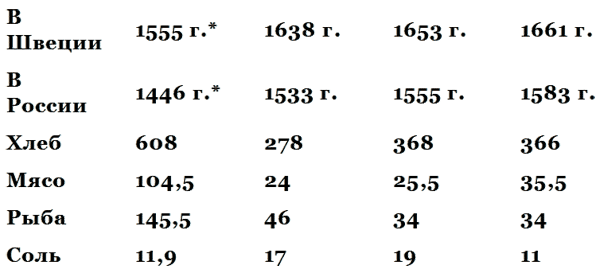
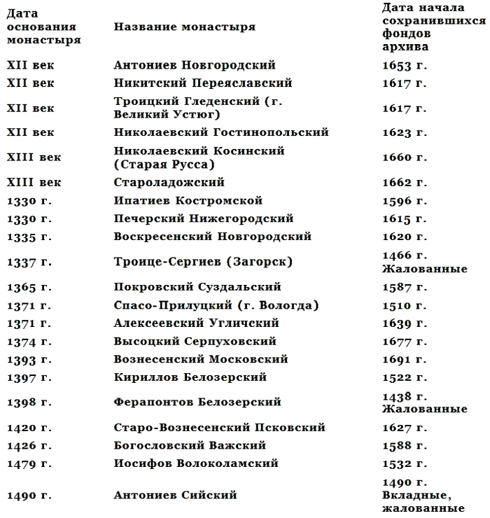
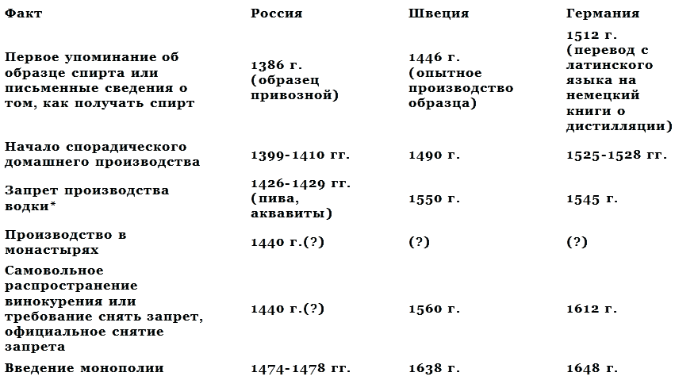

Что такое водка и ее история . Когда и почему возникло винокуренное производство в России .

1. Определение исторического периода рождения водки
В предыдущей части на основе анализа лингвистических (терминологических) и хронологических данных, а также исходя из известных нам фактов материальной культуры относительно технической и производственной базы винокурения мы пришли к выводу, что производство качественно нового продукта — хлебного вина, или хлебного спирта, — могло возникнуть никак не ранее второй половины XIV — первой половины XV века, то есть на протяжении примерно одного-полутора столетий, учитывая, что нам почти достоверно известно из источников, что уже в самом начале XVI века, в 1505 — 1510 годах, винокурение в Русском государстве было достаточно развито.
Таким образом, мы определили период, в котором следует вести поиски более точной даты создания производства водки или её прототипа — хлебного спирта — в Московском государстве или в других государственных образованиях тогдашней Руси — Тверском, Нижегородском, Рязанском княжествах или в Новгородской республике.
Разумеется, нельзя думать, что создание винокурения, имевшего глубокую предысторию в виде квасоварения и подготовленного всем предыдущим ходом исторического развития в области создания алкогольных напитков, могло произойти в какой-то конкретный день, месяц или даже год. Скорее всего, имел место постепенный многолетний процесс перехода от квасо — и пивоварения к корчажному виносидению, а уже затем к собственно винокурению, с его специфическим техническим оснащением и технологическим процессом.
Однако назвать если не год, то по крайней мере десятилетие или двадцатилетие, когда возникновение винокурения в России было наиболее вероятным, а также локализовать это десятилетие в начале, конце или в середине обозначенного выше периода вполне возможно.
Ведь помимо прямых указаний исторических источников — печатных и вещественных — историк располагает целым арсеналом косвенных исторических доказательств, главными из которых являются данные экономического и социального порядка, могущие пролить свет на время появления водки.
Выше мы неоднократно подчёркивали, что водка — особый продукт в том отношении, что он тесно связан с государственными, экономическими и социальными проблемами любого общества, любой формации. А раз так, то и поиск «даты» возникновения водки надо вести посредством детального, тщательного анализа соответствующей экономической и социальной обстановки в государстве.
Иными словами, следует пристально вглядеться в обстановку периода середины XIV — начала XVI века, «прочесать» все события за эти полтора столетия и посмотреть, не было ли там таких моментов, которые резко изменили существующее до этого положение, были каким-то скачком, сдвигом, переменой условий общественной жизни, жизни государства. Этот скачок должен быть так или иначе связан с появлением винокурения и водки, ибо лишь сильные изменения в экономике могли вызвать появление нового вида производства, а вместе с тем само по себе появление водки без сомнения должно было бы найти отражение в соответствующих социальных переменах. Таким образом, период между экономическим и социальным сдвигами и должен указать нам более точный исторический момент возникновения русского винокурения.
До того как начать поиски, руководствуясь указанным историческим ориентиром, следует, однако, более точно определить, каков же должен быть характер этих экономических и социальных сдвигов или перемен, какие у них должны быть признаки, по которым мы могли бы узнать, что они представляют собой именно сигналы, имеющие отношение к истории винокурения и водки.
2. Экономические факторы, условия и признаки появления винокурения
Существует один крайне важный признак, являющийся своеобразным точным сигналом, свидетельствующим о наличии винокурения в любой стране как более или менее налаженного и регулярного производства. Этот признак — резкое изменение налоговой политики, налоговой системы в результате введения нового фискального фактора: винной монополии, охватывающей, как правило, и производство и сбыт хлебного вина.
Именно хлебное вино, поскольку его изготовление базируется на таком мериле стоимости, как хлеб, зерно, лежащем в основе экономики любого средневекового феодального государства, сразу же по возникновении становится объектом пристального внимания со стороны государства и главнейшим предметом государственной монополии. Тем более это должно было произойти в Русском феодальном государстве с его ярко выраженным земледельческим характером хозяйства, с его зерновым направлением в земледелии. В то же время не только сырьё для водки, но и сам результат водочного производства, сама водка, как только её начинают производить и выставлять на рынок, моментально выступает в качестве концентрированного, более портативного и более ценного, компактного выражения зерновой, хлебной стоимости, и внимание к ней не только органов государственного фиска, но и частных производителей и торговцев максимально возрастает.
Всё это, вместе взятое, даёт возможность буквально с точностью до года и месяца определить начало создания винокурения по дате введения винной монополии. Дело в том, что все другие алкогольные напитки, указанные в хронологическом и терминологическом списках первой части данного исследования, не знали никакой финансовой узды, налагаемой на них государством. Древняя Русь, как и Древняя Греция или древнейшие государства Кавказа и Малой Азии — Мидия, Парфия, Армения, не знала никаких налогов на алкогольные напитки, не знали их и Британия, и древняя Шотландия, находившиеся в противоположной части Европы. Виноделие, медоварение и пивоварение, издавна носившие патриархальный (домашний или общинно-артельный) характер, были тесно связаны с религией и ритуальными обычаями, восходящими к языческому культу предков и загробных верований, то есть относились к сфере первобытнообщинной идеологии, высокой и священной материи, их издревле использовали для важных государственных, торжественных, религиозно-политических целей (например, тризны, вакханалии, праздники сева и сбора урожая, начала и середины года, празднование военных побед и др.). Поэтому все эти напитки рассматривали не просто как алкогольные, но в первую очередь как священные и по принципу их применения, и в силу их древности, а потому традиционно не связывали с фискальными интересами классового государства, возникшего позже них и молчаливо признававшего их неприкосновенность как даров природы (виноград, мёд, хмель), на которые не могло посягать общество уже в силу древнейшей традиции, идущей со времён родового строя.
Домашний, семейный, родовой или общинный, артельный, но всегда патриархальный характер производства этих алкогольных напитков, родившихся в период собирательства, задолго до появления земледелия и скотоводства, начиная от пальмового вина египтян и до ставленного мёда славян или верескового эля пиктов, делал их священными и неприкосновенными институтами в любом государстве, в любом позднейшем общественном строе, пришедшем на смену родовому, — и в рабовладельческом, и в феодальном.
С винокурением дело обстояло совершенно по-иному. Оно было одним из первых технических открытий и усовершенствований феодального общества, приобретающих широкий общественный и государственный характер. Возникнув в эпоху перехода от патриархальщины к рыночно-денежному хозяйству, оно само открывало более лёгкий путь к новой экономической эпохе. Вот почему оно крайне ревниво и опасливо было сразу же объявлено собственностью государства, монархии, её регальной монополией.
В то время как виноделие, медостав и пивоварение оставались всегда свободными от обложения налогами и лишь при перевозке через ту или иную границу подвергались обычным и довольно низким таможенным пошлинам, хлебное вино — как всякий товар и просто как любая кладь, груз — сразу же после своего появления становилось предметом особого налога.
На смену бесконтрольному, свободному и неограниченному производству виноградного вина, березовицы, кваса, варёного и ставленного мёда, домашнего солодового пива и браги приходит вдруг, внезапно, жёсткая, беспощадная, скрупулезно проводимая «государственная регалия» на выделку хлебного спирта. Производство хлебного вина в виде самогона, или корчмы, как его именовали в то время, одинаково считалось нарушением важнейшей государственной привилегии как в XV — XVII, так и в XIX — XX веках. Во всех странах мира производство водки частным лицам категорически, подчас под страхом сурового наказания, запрещалось во все времена. Исключения из этого правила были крайне редки и носили временный характер. Всё это было неизбежным следствием иной роли, которую играло винокурение в общественном производстве по сравнению с изготовлением других напитков. Пиво, например, разные народы приготавливали долгое время лишь один раз в год, к 1 марта (отсюда «мартовское пиво» — лучшее по качеству, т.е. свежее и чистое), это требовало усилий, затрат труда и материального вклада всех членов общины; в древнерусских городах пиво варили всей улицей, сотней, слободой, посадом, концом (т.е. районом), в селениях — всем погостом, починком, всей улицей, деревней. Аналогичное положение существовало и в Центральной Европе (в Германии), и в самых глухих районах Средней Азии (например, в Туркмении, где для приготовления местного пива один раз к празднику Байрама каждый житель кишлака должен был принести хоть фунт зерна).
Поэтому пивоварение столетиями оставалось единовременным, чрезвычайным, эпизодическим событием, затрагивающим отдельные группы людей, их общины, сообщества, но совершенно не касающимся государства и общества, общественного производства в целом[70].
Аналогично обстояло дело и с производством мёда-напитка, который рассматривали ещё более патриархальным, священным и «дарованным богами» (т.е. природой) не людям вообще, а именно такой их совокупности, как род, община, клан, племя, о чём ясно говорит разделение и закреплёние «бортных ухожаев» (т.е. территорий, где были дикие пчелы) за определёнными родо-племенными группировками[71].
Даже виноделие, при всем его размахе в некоторых странах и влиянии на внутреннюю и внешнюю торговлю (например, во Франции, Италии, Испании), оставалось всё же частным делом отдельных производителей, винодельческих «фирм», крупных и мелких виноторговцев.
Следовательно, винокурение одним своим появлением вызывало если не переворот, то заметный поворот в экономике и социальном фоне, а поскольку ему сопутствовала монополия на производство и сбыт водки, то установить дату возникновения винокурения в любой стране мы можем с достаточной точностью просто по дате указа о введении винной монополии.
Однако в России подобных, да и иных экономических документов, относящихся к XIV-XV векам, не сохранилось. Вот почему устанавливать факт введения винной монополии нам придется не юридически, на основе определённого документа — распоряжения, закона или фиксированной директивы, а чисто исторически — на основе анализа изменения условий, отражающих фактически наступивший экономический сдвиг, то есть на основе данных о резком расширении посевных площадей, посевов зерновых, значительном росте сборов урожая, явном скачке в увеличении оборотов торговли, заметном появлении повышенной потребности в деньгах, в переходе к товарно-денежным отношениям или в резком расширении масштабов таких отношений на внутреннем рынке.
Именно резкий переход, скачок в экономических условиях особенно характерен для появления винокуренного производства. Ведь само по себе появление идеи монополии, идеи установления государственной регалии на производство и сбыт водки, подобно регалии на соль и чай, объясняется тем, что при производстве всех этих продуктов весьма легко усматривается резкий контраст между крайне небольшой себестоимостью сырья и новой, относительно высокой розничной стоимостью готового продукта. Разница эта сохраняется и при сопоставлении стоимости готовой водки со стоимостью других алкогольных напитков, включая даже виноградное ординарное вино, и особенно подчёркивается контрастом в выходе доли готового продукта по отношению к доле сырья. Если при производстве мёда, как мы видели в первой части работы, масса сырья, затраченного на изготовление напитка, в несколько раз превышала массу готового продукта, не говоря уже о том, что на процесс производства, помимо основного сырья, необходимо было затратить ряд побочных дорогостоящих продуктов, а сам процесс требовал больших расходов, поскольку протекал годами, то при винокурении всё обстояло совершенно наоборот. Сырьё было крайне дешёвое, шло его на производство сравнительно мало, а ценность готового продукта в десятки и сотни раз перекрывала стоимость сырья. Если к этому прибавить удобство транспортировки водки, её невысокую стоимость по сравнению с перевозкой зерна, концентрацию большой ценности товара в малом объёме, его компактность, лёгкость деления товара и его сбыта, полное отсутствие проблемы хранения, поскольку этот продукт — спирт — абсолютно не портился, то всё это ещё больше превращало его в идеальный товар и объект для государственной монополии. Иными словами, если бы водки не было, то её непременно нужно было бы выдумать, и не из-за потребностей питья (пьянства), а как идеальное средство косвенного налогообложения.
Естественно, что стремление государственной власти к получению прибыли, пополнению казны в период образования централизованного государства, к изысканию средств, когда этого требовали исторические условия, могло быть лучше всего обеспечено введением монополии на производство и сбыт хлебного вина.
И наоборот, если условия требовали быстрого нахождения источника пополнения государственной казны, то они могли ускорить изобретение винокурения, когда оно было подготовлено уже к появлению, всем остальным ходом исторического развития. Именно так обстояло дело в России.
Во-первых, сокращение к XV веку исконного сырьевого естественного ресурса (дикого мёда) для производства русских национальных алкогольных напитков — ставленного и варёного мёдов и, во-вторых, изобретение смолокурения, дёгтесидения и появление технических средств этих производств к концу XIV — началу XV века создали уже сами по себе экономические и материально-технические предпосылки для появления винокурения.
Но одних этих предпосылок было недостаточно. Нужна была ещё резкая потребность государства и общества в новых средствах, в источнике прибыли, нужна была и общая значительная перемена исторических условий, которая побудила бы государство и общество испытать острую потребность в приобретении крупных денежных средств; нужна была, наконец, и историческая цель, на которую были бы необходимы огромные капиталовложения.
Такой государственной потребностью в ту эпоху были война за освобождение от татаро-монгольского ига в первую очередь; войны за подчинение удельных княжеств и крупных феодальных государств — Твери, Рязани и Новгорода — Московскому государству; война за выход к Балтике, за обладание Ливонией с её портами — Нарвой и Ригой; оборонительные тяжёлые войны с наступающей с запада и дошедшей до Можайска Литвой. Наконец, внутренняя война против феодалов-бояр внутри Московского великого княжества, против их местничества и центробежных тенденций. И не в последнюю очередь нужны были средства, и немалые, для создания преданного царю нового аппарата насилия внутри складывающегося централизованного государства. Помимо войн, были и другие цели: освоение земель к югу от Оки, к востоку от Волги и к северу от Вологды, укреплёние казны, расходы на поддержание великокняжеского, а затем и царского престижа. Словом, в конце XIV — первой половине XV века расходов хватало и в целях не было недостатка.
При поисках исторически зримых признаков изменения ситуации в России в связи с появлением водки следует учитывать также и то весьма важное обстоятельство, что водка в средневековой России была одним из первых по времени новоизобретённых промышленных продуктов (порох и вместе с ним огнестрельное оружие хотя и появляются в России почти одновременно с водкой, но являются более сложной технической новинкой, их потому первоначально не производят собственными русскими силами, а импортируют из Западной Европы; кроме того, порох и оружие не становятся известны сразу широким слоям населения, народу). Водка же, в качестве фактически первого массового промышленного продукта, должна была оказать большое воздействие на экономику страны, а её «внедрение в массы» должно было произвести более сильный социальный шок.
Ведь до тех пор все ремесла, все производства были традиционными, основывались на навыках, методах, приёмах и инструментах, созданных предшествующими поколениями и освоенных уже веками, в крайнем случае десятилетиями. Следовательно, значительный контингент людей, обслуживающих монополию винного производства и торговли, должен был учиться чему-то абсолютно заново, не имея учителей, традиций, навыков, вынужден был ломать свои прежние представления. И все эти люди впервые в общественных условиях того времени оказались на государственной службе промышленного, а не промыслового и ремесленного характера, на «государственном производстве». Они уравнивались и экономически и социально, быть может, лишь с одной привилегированной профессиональной группой — с кузнецами — и всё же фактически оказывались поставлены выше их. И это также имело социальные и экономические последствия.
Таковы в общих чертах экономические и социально-экономические факторы, предпосылки, причины и последствия появления и развития винокуренного производства.
Что же касается массового сбыта (торговли) водки через сеть государственных питейных заведений — кружечных дворов и царёвых кабаков, то одни лишь факты перехода к новому виду «торговых точек» и запрещение продажи водки в частных лавках всех видов, особенно в корчме (постоялых дворах), а также закреплёние термина «корчемство» за незаконной торговлей водкой дают возможность по этим признакам установить время появления водки в России.
3. Социальные, социально-психологические, моральные и идеологические последствия появления винокурения в России, служащие сигналом для установления времени появления водки
Обратимся теперь к социальным признакам, которые могут указать нам на появление водки в обществе, прежде не знавшем её.
Одной из заметных особенностей водки как продукта и товара было то, что она разлагающе воздействовала на старое, пронизанное древними традициями, замкнутое общество средних веков. Она разрушала одним ударом как социальные, так и старые культурные, нравственные, идеологические табу. В этом отношении водка подействовала как атомный взрыв в патриархальной устойчивой тишине. Вот почему последствия появления водки особенно легко различимы в социальной и культурной областях, причём все они отражаются в документах эпохи — от юридических актов до художественной литературы.
Отсюда признаком появления водки могут быть не только статистические показатели роста пьянства, но и возникновение иных, более свободных от патриархальных уз и морали, общественных и бытовых отношений, появление новых конфликтных ситуаций в обществе и заметное ускорение социального расслоения и дифференциации старого общества, его классов.
Особое значение имеет и факт использования водки правящими кругами как нового средства, как орудия социальной политики. Спаивание народов Севера, хорошо известное в XIX — XX веках, имело свою предысторию в спаивании коренного русского населения Московского государства на три-четыре века раньше.
Признаки появления водки, таким образом, могут быть легко обнаружены и на основе анализа не только экономического, но и чисто социального и социально-культурного, а также идеологического материала эпохи конца XIV — начала XVI века. Наконец, создание новых учреждений по сбыту водки и надзору за её хранением также получает заметное отражение в социальных и идеологических фактах.
Уже один институт «кружечных голов» и «целовальников», лиц, основным качеством которых должен был быть предельный цинизм, неизбежно влёк за собой возникновение невиданных ещё в средневековом обществе конфликтов, поскольку «идеология» целовальников объективно являлась прямым вызовом официальной христианской морали. И поскольку источником, насаждавшим новые общественные противоречия, было само царское правительство, то «нравственные конфликты» неизбежно должны были принимать форму общественных. Ведь в то время как церковь метала громы и молнии против пьянства и сопутствующих ему дерзости и безбожия, целовальники получали предписание «питухов от царёвых кабаков отнюдь не отгонять» и «кружечный сбор сдавать в царёву казну против прошлых с прибылью», то есть призывали всячески расширять сбыт водки. Всё это не могло не найти и, несомненно, находило отражение в самых различных проявлениях общественного мнения, в общественных конфликтах и в появлении нового типа «предерзостных» людей, свободных от пут средневековой морали и традиций.
Эти люди быстро пополняли собой новый социальный слой городского люмпен-пролетариата, или, по терминологии того времени, «посадской голытьбы», всегда полуголодной, злобной, жестокой, циничной, не связанной никакими нормами толпы, энергию которой можно было направить по любому руслу за… ведро водки.
Резкий рост численности городского нищенства также был следствием появления водки. Нищенство рекрутировалось, с одной стороны, из членов семей разорившихся «питухов» всех сословий, и с другой — из менее активной части спившейся «посадской голытьбы». Именно резкий скачок в численности нищенства, в контрастной диспропорции к обычному процессу, порождаемому естественными экономическими факторами — неурожаями, классовой дифференциацией и т. п., указывает на то, что в появлении нищенства приняла участие на сей раз водка, причём не только прямое, но и косвенное (например, резкое увеличение числа городских пожаров и полное выгорание некоторых городов и сел).
Наконец, заболеваемость, эпидемии и эпизоотии также имели связь с появлением винокурения и широкой продажей и распространением потребления водки (например, широкое распространение приняло кормление скота остатками винокуренного производства — жомом, бардой). Таковы в общих чертах те социальные, общественные, культурно-моральные факторы, следствия или признаки появления винокурения, которые мы можем обнаружить, изучая историю конца XIV — начала XVI века, и по которым можно установить время возникновения водочного производства.
4. Где территориально, в каком из русских государственных образований XIV — XV веков могла возникнуть водка
Прежде чем детально рассматривать внешнеполитические, социально-экономические, внутриполитические и культурно-идеологические события конца XIV — начала XVI века с целью выяснить, как, в чём и на каком хронологическом отрезке резко изменились прежние общественные, производственно-технические и бытовые исторические условия, прежде чем выяснять, как и в какой степени эти изменения были связаны с появлением винокурения или вызваны распространением водки, следует установить, на какой территории, в каком государстве, в каком обществе мы должны изучать все эти явления и искать все указанные нами выше признаки.
Дело в том, что в период XIV — XV веков на территории России было несколько независимых крупных самостоятельных государственных образований, то есть отдельных государств. Поэтому принципиально важно указать, в каком из них можно предполагать возникновение водки, в каком из них она действительно возникла. Обосновать научно необходимость поисков — в определённом месте, в том или другом государстве — крайне важно до начала самих поисков, ибо иначе исследование можно провести впустую или чрезвычайно усложнённо и затянуто. Но как это установить?
Прежде всего уточним, о каких государственных образованиях может идти речь.
На территории европейской части России в XIV — XV веках, не считая ряда мелких удельных княжеств, находившихся в вассальной или полувассальной зависимости от крупных государств, существовали Золотая Орда, Московское великое княжество, Тверское великое княжество, Рязанское княжество, Нижегородское княжество. Новгородская республика, Великое княжество Литовское, Крымское государство Гиреев, генуэзская колония Кафа, Ливонский орден (в то время бывший частью Тевтонского ордена). Из этого десятка государств два, а именно Золотая Орда и Крым, не могли быть родиной водки по целому ряду веских причин[72], и потому о них речи не будет.
Западные государства — Литва и Ливония — требуют более внимательного рассмотрения.
Литва в средние века была главным центром торговли мёдом в Европе. Здесь его запасы ещё не подвергались такому сильному истощению, как в русских государствах. Бортничество северной части Литовского государства стало дополняться в XV веке пасечничеством в южных, украинских частях Литвы. В конце XIV века Литва продолжала прочно базировать своё производство алкогольных напитков на медовой основе, тем более что конкуренция русских-государств в то время ослабла, а спрос на Западе и цены на мёд на европейском рынке сильно поднялись. Кроме того, ставшая с 1386 года католической страной Литва никак не могла свертывать своё пчеловодство, а, наоборот, должна была увеличивать, расширять его производственную базу, дополняя древнее бортничество пасечничеством, поскольку папский престол рассматривал Литву как главную базу поступления воска для свечной промышленности в Европе, находившейся в руках католических монастырей. Вот почему римская курия требовала от Литвы развития пчеловодства, а это определяло односторонний характер литовского хозяйства, основанного на производстве мёда-напитка и воскобойном промысле, как основных источниках поступления золота (денег) из Западной Европы.
Наряду с наличием медового сырья Литва была гораздо хуже обеспечена зерновым сырьём. В собственно Литве и в Белоруссии основным злаком был овес, на втором месте стояли посевы ржи, скудно обеспечивающей своими урожаями лишь самые минимальные потребности местного населения в столовом хлебе. В южной, украинской части Литовского государства, на Волыни, Киевщине и Брацлавщине существовало землепашество, были превосходные природные условия для земледелия, но непрерывные войны, набеги кочевых народов (особенно ногайцев, крымчаков), а также чрезвычайно редкое население этих районов, отсутствие рабочей силы и трудности поднятия целины практически не давали возможности создать устойчивое, развитое, прибыльное зерновое хозяйство.
Украинское казачество, поселённое здесь во второй половине XV века для охраны приграничной полосы от набегов кочевников и несения сторожевой службы, фактически не занималось земледелием. Оно пользовалось отчасти услугами арендаторов-наймитов, то есть полурабов, вынужденных отдавать значительную часть урожая хозяину за владение землей, а потому вовсе не заинтересованных в интенсификации сельскохозяйственного производства. Поэтому-то на «цветущей земле Украины» вплоть до второй половины XVII века, то есть до воссоединения Украины с Россией, фактически не могли использоваться природные богатства и развиваться хозяйство в соответствии с имевшимися благоприятными природными условиями.
Украина обеспечивала себя, и весьма неплохо, пока речь шла об отдельно взятом хозяйстве, хуторе. Но как целый хозяйственный, а тем более государственный организм Украина в XIV — XV веках представляла собой фактически пустое место. Организовать здесь такое государственное производство, как винокурение, требующее контроля во всём — от поступления и сбора сырья до наблюдения за ходом производства, сбытом и хранением готового продукта, и обеспечить такой контроль надёжными людьми было бы фантастикой в условиях средневековья.
Короче говоря, создание винокурения на Украине в виде организованного, регулярного монопольного государственного производства в условиях XIV — XV веков и вплоть до создания Запорожской Сечи — государства, обладавшего и военной силой, и исключительно крепкой, дисциплинированной организацией внутренней жизни, исторически было невозможно. А Запорожская Сечь возникла лишь с 40-х годов XVI века, то есть к тому времени, когда винокурение было уже хорошо развито, например, в Московском государстве, в Польше и даже в Швеции. Следовательно, говорить о Литве — Литовском государстве во всех его малостях: Жемайтии, Старой Литве, Инфлянтах (Латгалии), Белоруссии, Чёрной Руси, Волыни и украинских землях — Киевщине, Брацлавщине, Подолии как о месте первоначального возникновения винокурения в XIV — XV веке не приходится. Исторически это было невозможно.
Что же касается Ливонии, а также Кафы — государств маленьких, далеко отстоящих друг от друга на северо-западной и юго-восточной периферии Восточно-Европейского массива и тесно связанных всей своей историей, хозяйством и культурой с Западной Европой, с папским Римом, с Италией и Германией, то создание здесь винокурения было невозможно экономически, прежде всего с точки зрения отсутствия сырьевой базы, в то время как технически и теоретически не только изобретение, но и осуществление такого производства в экспериментальных масштабах было вполне возможно.
Дело в том, что генуэзцам дистилляция и получение винного спирта из виноградного вина были известны с 40-х годов XIV века.
Ливонские рыцари, имевшие тесные связи с тевтонскими, вплоть до 1309 года постоянно посещали свои владения, остававшиеся в Венеции и Трансильвании, и потому, вполне вероятно, сохранили контакты с итальянскими городами-государствами до 30-40-х годов XIV века. В Ливонии были знакомы с получением винного спирта, ибо среди монашеских орденов римской курии, имевших в своём хозяйстве виноградники, процесс дистилляции после открытия Вилльнева не был уже секретом. Это можно подтвердить и тем фактом, что данцигские представители Тевтонского ордена в 1422 году демонстрировали «горящее вино» (спирт). Это мог быть в равной степени как винный спирт собственного изготовления, так и привозной из Италии, Франции или даже из арабских стран Северной Африки, с которыми тевтоны поддерживали через генуэзцев и венецианцев торговые сношения. Принципиальной разницы здесь, в сущности, нет. Ведь речь может идти только об экспериментальном производстве, об изготовлении небольших, ограниченных, «домашних» партий винного спирта (более сомнительно — хлебного спирта) в монастырских лабораториях.
До внедрения такого изобретения в производство, говоря современным языком, ещё весьма далеко, а тем более далеко до превращёния водки из лабораторной пробы, из химического вещества в важный производственный, социальный и общественно-значимый фактор. Только в этом случае водка становится действительно водкой в полном значении этого понятия. Такое становление водки как социального понятия имеет прямое отношение и к качеству водки как товара, к её достоинствам, кондиции, наконец, к стандартности качества. Лишь после того как водка, хлебное вино, превращается в общественно заметный и социально значимый фактор, общество и государство, как основной уполномоченный общества, начинают обращать серьёзное внимание на всё, что связано с её качеством, составом, установлением единого стандарта на территории всего государства. И это вполне понятно, ибо водка, как предмет государственного значения, — товар, право на производство и сбыт которого государство резервирует за собой, приобретает необходимость соответствовать высокому престижу государства и практически становится эквивалентом денег.
Вот почему любое изменение качества водки воспринимается в средние века как нанесение ущерба государству, как такое же преступление против государственной регалии, как и фальсификация государственной монеты. Вот почему любое правительство всегда проявляло и проявляет заботу о высоком качестве или о единообразии стандарта качества водки. Нарушителями этого выступают всегда отдельные, низовые, корыстные исполнители местной администрации, но в этом случае они всегда посягают на правительственный престиж, а вовсе не действуют от лица правительственной власти. Кстати, такие нарушения качества государственного стандарта всегда чутко воспринимаются обществом, народом, который в случаях грубого несоответствия качества монопольного государственного продукта установленному стандарту реагирует крайне остро — бунтом, вспышкой народного возмущения, восстанием.
История Западной Европы и России даёт нам многие примеры таких реакций: соляной и медный бунты в Москве (удорожание соли при низком качестве, замена стандартной серебряной мелкой монеты медной), серебряный бунт в Новгороде (замена тяжёлой старой гривны тонкими монетами-«чешуйками»), аналогичные бунты в различных странах в связи с облегчением веса серебряной монеты, весовые бунты (из-за подделки гирь или вследствие изменения стандарта гирь) и т. п.
В период винной монополии в России, ни первой — с XV до XVII века, ни последней (четвёртой) — с 1896 до 1917 года, не было известно ни одного случая, который можно было бы квалифицировать как «водочный бунт»[73]. Недовольство вызывали только акцизная и откупная системы, при которых государство сдавало как бы в аренду свою регалию, что вело к злоупотреблениям в отдельных местах. Это лишний раз говорит о том, что понятие «полноценности», «высокой кондиции» и «качества» водки как продукта особого, наделённого «общественными» признаками, неразрывно связано с правовым, социальным положением этого продукта и что поэтому, говоря о производстве водки, о её возникновении, мы не имеем права отрывать этот вопрос от того статуса, который приобретает водка после своего возникновения.
Если она возникла как результат эксперимента, как образец (даже если этот образец создан в количестве сотен литров!), но не стала товаром, причём товаром, имеющим государственное признание и привилегии в виде монополии, то она ещё не может называться водкой в полном смысле этого слова. Ибо только установление правового и социального статуса за водкой, признанного государством, обеспечивает её качество и как пищевого продукта. Это качество может быть не обязательно самым высоким (что вполне понятно, ибо в каждый данный исторический период оно будет зависеть от общего уровня знаний и развития техники), но оно никогда не будет произвольным и подверженным колебаниям, как у водки-самогона, изготовленной тайно, незаконно, в нарушение и без учёта государственного стандарта. Качество государственно-монопольной водки не может быть никогда низким, каковы бы ни были развитие техники и исторические условия, ибо государственная монополия будет автоматически стремиться к установлению предельно высокого для данного времени стандарта качества. Это продиктовано как престижными государственными соображениями, так и соображениями весьма далекими от альтруизма — чисто деловым стремлением первой фирмы государства, чтобы выпускаемый ею монопольный продукт не мог быть подделан и мог быть узнан любым потребителем по характерному стандартному высокому качеству.
Таким образом, водка становится по-настоящему водкой лишь с того момента, когда она превращается в государственно охраняемый и лелеемый продукт. Без этого нельзя говорить о производстве водки. Без этого мы имеем дело лишь с экспериментом по созданию хлебного спирта. Вот почему вполне должно быть очевидным, что случайные факты наличия или демонстрации образцов винного спирта или хлебного вина на территории Тевтонского ордена в начале XV века (в 1422 г.) не могут служить основанием для вывода о том, что там была впервые изготовлена водка. Тем более что за этим фактом не следует никакого дополнительного известия о создании винокуренного производства или водочной торговли в Ливонии. И такие факты не могут быть уже потому, что после поражения под Грюнвальдом в 1410 году Тевтонский орден не оправился и прекратил своё существование спустя 50 лет, в 1466 году, причём весь этот последний период своей истории почти непрерывно воевал.
В 1422 году, к которому относится упоминание о «горящем вине», продемонстрированном в Данциге, орден заключил Мельнеский мир с Польшей, и вполне возможно, что в честь празднования мира тевтонские рыцари привезли из Италии или изготовили, быть может, сами по рецептам провансальцев и генуэзцев в монастырских орденских лабораториях спирт. Но что это был за спирт — винный или хлебный, на каком сырье он был основан, нам абсолютно неизвестно. Даже само название «горящее вино», «вино-пожар» (Brand-Wein, brantwein, brannvin), позднее закрепившееся за хлебным вином и водкой в Германии и германоязычных странах, в данном случае не говорит ни о чём, ибо впервые оно было употреблено не как термин, а как описание впечатления. То, что это же слово позднее превратилось в термин, относящийся исключительно к хлебному (или позднее — картофельному) вину, к водке, в данном случае не имеет значения. Здесь это слово не термин, и, следовательно, оно не даёт нам права видеть в нём то, что мы обычно усматриваем в термине «хлебное вино», — то есть водку.
Немаловажно в этой связи вновь напомнить тот факт, что в германоязычных странах водка (хлебное вино) и её название «брантвайн» появляются лишь после Великой крестьянской войны, то есть где-то в 30-40-х годах XVI века. Мартин Лютер, переводивший с греческого в 1520 году Библию и встретивший там арамейское название водки — «сикера», не мог найти для него эквивалента на немецком языке и потому назвал его «сильный напиток» (Stark Gentrank)[74], поскольку он был поставлен в Евангелии в порядке перечисления после виноградного вина. Это показывает, что и наименование «горящее вино» было первоначально такой же попыткой описать водку по одному из бросающихся в глаза отличительных признаков. Лишь значительно позднее «вино-пожар», или «горящее вино», превратилось в термин. Но это произошло уже в начале — середине XVII века в Германии, в Тридцатилетнюю войну.
Тевтонский орден, Ливония не могли стать создателями винокуренного производства, поскольку они не обладали экономическими условиями для его развертывания. Непрерывные войны на территории ордена, недостаток рабочих рук, ставший с XV века хроническим из-за резкой убыли населения в результате военных потерь, а также из-за массового бегства крестьян в соседние земли — Польшу и Новгородскую Русь — от произвола ордена и тяжкой барщины (в Польше и в Новгороде не было закрепощения в это время), и, наконец, необходимость ввозить зерно из Польши для покрытия собственных потребностей, поскольку местного зерна недоставало, — все эти обстоятельства, вместе взятые, делали создание винокуренного производства на территории Тевтонского и Ливонского ордена крайне затруднительным, особенно учитывая общее политическое и экономическое ослабление этого военно-теократического государства. Следовательно, мы должны исключить и Ливонию как родину водки и водочного производства из нашего рассмотрения.
Что же касается Кафы, генуэзской колонии, то в ней винный спирт изготавливал. На этот счёт имеются точные сведения источников, но всё-таки это был не хлебный спирт, ибо у нас нет никаких данных на этот счёт, поскольку сырьё генуэзцы имели в основном виноградное, да и рецепт дистилляции и перегонки они заимствовали у провансальцев, вырабатывавших спирт из закисшего виноградного вина.
В 1386 году генуэзское посольство, направлявшееся в Литву через Московское княжество по случаю обращения Витовта и литовского народа в католичество, демонстрировало винный спирт московским боярам. Однако не как напиток, а в качестве лекарства. В 1429 году генуэзцы также проездом в Литву на Тракайский съезд, где Витовту должен был быть присужден королевский сан, показывали аквавиту при дворе Василия III Темного, но она была признана слишком крепкой, непригодной для питья. Генуэзское посольство везло аквавиту в Троки Витовту, но из описания семинедельного празднества совершенно неизвестно, был ли этот подарок там воспринят как напиток и был ли он предложен гостям для застольных возлияний. Скорее всего, и в этом случае аквавита (а может быть, уже и коньяк?!) была воспринята только как лекарство[75].
Показательно и интересно то, что демонстрация западноевропейского изобретения винного спирта, или аквавиты, как генуэзцами из Кафы, так и тевтонско-ливонскими рыцарями из Данцига почти совпадает по времени — 1422 и 1429 годы! Это лишний раз доказывает то, что здесь в обоих случаях имела место попытка ознакомить восточноевропейские дворы — русский, литовский и, возможно, польский — с достижениями западной науки и техники с целью демонстрации силы и искусства Запада.
Однако на этом этапе дальше эксперимента, опыта, демонстрации дело не пошло. Ни как средство-панацея, ни как товар спирт не произвёл впечатления на «восточных варваров».
О возможности же получения хлебного вина ещё не думали или не догадывались, причём ни та, ни другая сторона.
Таким образом, ни Ливония, ни Кафа не были центрами возникновения винокурения и водки. Кафа в 1395 году была совершенно уничтожена войсками Тамерлана, а в 1465 году вошла в состав Крымского ханства Гиреев, прекратив существование не только как государственное и экономическое образование, но и вообще как культурно-ремесленный центр.
Посмотрим теперь, как обстояло дело с русскими государствами. Самое мощное и древнейшее из них — Новгородская республика была в экономическом и отчасти внешнеполитическом отношении ориентирована на Балтику и Поморский Север. Она вела обширную торговлю с Ганзой — Данией, Швецией, Голландией, Тевтонским орденом и несколько меньшую с Польшей и Литвой. Главным предметом сбыта новгородцев были меха, лён, пенька, отчасти воск, серебро. Новгород закупал в то же время у Московского и Нижегородского княжеств хлеб, зерно. Издавна в обмен на свои товары Новгород получал из Западной Европы виноградные вина: немецкие (рейнские), французские (бургундские). Ввоз виноградных вин был традиционен для Новгорода с Х — XI веков; более того, Новгород реэкспортировал часть вин в Московское и Тверское княжества, а взамен покупал московский мёд для экспорта в Западную Европу.
Таким образом, в Новгороде, несмотря на его экономическое могущество, не было условий для возникновения винокурения: отсутствовали излишки хлебного зерна, не было своего развитого зернового хозяйства[76], не было недостатка во ввозном виноградном вине, существовала традиция его потребления. Кроме того, в Новгороде с XII века установилась прочная традиция пивоварения, в основном ритуального характера, носившего форму общинно-артельного производства: пиво варила вся улица, вся сотня, весь конец, весь посад, причём в складчину.
Многочисленные давно и тщательно ведущиеся археологические раскопки в Новгороде и Пскове и в других городах на территории Новгородской Руси также не дают никакого материала о возникновении здесь винокурения, так что нет никаких — ни документальных (на берестяных грамотах), ни экономических, ни исторических, ни материально-археологических — оснований для того, чтобы считать возможным возникновение винокурения в Новгороде.
Более того, когда винокурение было уже развито в Московском государстве, оно не привилось в Новгороде, и сюда привозили из Москвы хлебное вино, то есть водку. Следовательно, Новгородская республика отпадает как место, территория, на которой могло возникнуть винокуренное производство.
Следующим граничащим с Новгородом государством было Тверское великое княжество. В XIV веке оно переживало крайне тяжёлый период. Его территория всё время сокращалась, окружаемая Московским княжеством. Оно являлось постоянным объектом военных и дипломатических нападок со стороны московских властей. Москва, распространившая к середине XIV века своё влияние далеко на Север, владевшая Вологдой, простиравшая свои владения за Волгу и тянувшаяся уже к Предуралью, «натыкалась» у Волоколамска всего в 80 км от Кремля на тверские пограничные заставы, на враждебные таможенные рогатки. Естественно, что московские князья делали всё возможное, чтобы уничтожить Тверь как государство. Более того, они терроризировали тверичан тем, что блокировали границы Тверского государства, изолировали его от подвоза необходимых товаров, досаждали тверским крестьянам набегами и уничтожением их посевов, так что те в конце концов стали перебегать в Московское государство, где к ним за это проявляли «милость». Так, тверской князь был лишен поддержки подданных и был вынужден оставить Тверь, бежав в Литву.
Совершенно ясно, что тянувшаяся свыше столетия борьба Москвы против Твери на измор не давала возможности тверичанам заниматься чем-либо, кроме проблем обороны. Тут было, естественно, не до винокурения, тем более что проблема обеспечения себя хлебом в условиях постоянной блокады со стороны Москвы всегда была для Твери крайне острой.
Остаётся выяснить, как обстояло дело в русских государствах, расположенных к юго-востоку от Москвы, — в Рязанском великом княжестве и в Нижегородском княжестве.
Рязань. До Куликовской битвы, то есть до 1380 года, нельзя говорить о возможности возникновения винокурения в Рязани, равно как и в других русских государствах. После же Куликовской битвы положение Рязани — единственной из русских земель вставшей на поддержку войска Мамая и разделившей с ним его участь — было крайне тяжёлым. Ни политически, ни экономически Рязань уже не могла оправиться после Куликовской битвы. Находясь в постоянном союзе с Ордой и Крымом и в обострённых, враждебных отношениях с Москвой, Рязанская земля в последнее столетие её самостоятельного существования превратилась фактически в проходной двор, в гнездо интриг, прибежище беглых из разных государств — татар, белорусов, ногайцев, литовцев, русских. Кроме того, в пределах княжества жили также мордовские племена — мокша и эрзя, касимовские татары, мещеряки и чуваши, что ещё более увеличивало национальную пестроту и нестабильность этого промежуточного, пограничного государства.
В связи с этим экономическое положение Рязанского княжества было крайне неустойчивым. Русское население, составлявшее лишь менее половины численности «рязанского народа», несло основную тяжесть повинностей и было главным производителем зерна. Остальные не занимались земледелием. Отсюда лишь в урожайные годы в Рязанской земле создавались излишки хлеба, которые шли на вывоз. В остальные, и особенно в неурожайные годы Рязань с трудом обеспечивала собственные потребности в хлебе. Возможности расширения посевных площадей были невелики из-за того, что значительную часть княжества занимали болотистые земли Мещеры и непроходимые леса, являвшиеся бортными и охотничьими угодьями мордвы и союзных (касимовских) татар. Русское же население, опасаясь постоянного разорения в условиях политической нестабильности Рязани, крайне неохотно обрабатывало землю князей и крупных рязанских вотчинников.
Наконец, известное препятствие возникновению винокурения в рязанских землях представляло развитие здесь медового пивоварения под явным влиянием мордовских национальных традиций. Приготовление медовой браги пуре являлось по своему существу естественным препятствием развитию винокурения, ибо было построено на принципиально противоположной технологии и как бы исключало иной подход, иное мышление в деле производства алкогольных напитков. Подобное явление широко известно во всем мире: в Чехии, например, где издревле сложилось классическое пивоварение, винокурение возникло очень поздно — лишь в XIX веке, да и то под влиянием чисто внешних факторов. То же самое наблюдалось и в Рязани.
Таким образом, ни экономические условия, ни историческая обстановка, ни национальные традиции не способствовали возникновению на Рязанской земле винокурения.
Нижегородское княжество. Эта земля находилась в сравнительно благоприятном положении. Княжество не было подвержено такой нестабильности положения, как Рязань. Находясь в постоянном союзе и тесных экономических отношениях с Москвой, оно, несмотря на близость к татарским землям, не столь сильно подвергалось опустошениям. Этому содействовали непроходимые леса, занимавшие большую часть нижегородских земель. Но развитие земледелия здесь было слабее.
Основу экономики княжества составляли рыболовство, охота на дичь — красную и пернатую, охота на бобров, бортничество и выделка лыка и рогож, а также предметов из них: лаптей, коробов, корзин, туесов. Отчасти было развито и животноводство, в основном овцеводство, шерстобитное и валяное производство. Всё это делало Нижегородское княжество охотничье-ремесленным резервом Москвы, превращало его в естественного партнера, заинтересованного в сбыте всех этих товаров лесного хозяйства посадскому и столичному населению Московского государства. Но именно это направление хозяйства препятствовало развитию хлебопашества, земледелия, тем более что для этого надо было выжигать лесную целину, что было крайне трудоёмким процессом. Все эти обстоятельства в совокупности дают основание считать, что винокурение не могло возникнуть в Нижегородской земле, хотя княжество не испытывало особых затруднений с хлебом, и даже в случаях неурожаев не бедствовало так, как другие русские земли, но это объяснялось исключительно его благоприятным транспортным положением и возможностью снабжения зерном из других районов по Волге, Оке, Каме.
Наличие значительных по сравнению с нуждами населения запасов собственного мёда консервировало древние привычки к развитию медоварения и медового пивоварения. Ни в XIV, ни в XV, ни даже в XVI веках здесь не возникало вопроса о необходимости найти замену старым алкогольным напиткам.
Следовательно, все русские самостоятельные государства — Новгород, Тверь, Рязань, Нижегородская земля — не могли быть в XIV — XV веках потенциальными родоначальниками винокурения. Здесь не было совокупности условий, необходимых для его возникновения.
Остаётся рассмотреть, как обстояло дело в Московском великом княжестве.
Московское великое княжество уже к середине XIV века было крупнейшим и могущественнейшим государством среди других русских княжеств. Во-первых, оно оказалось самым густонаселённым, поскольку сюда в течение ХIII — XIV веков стекалось для укрытия от татарских грабежей самое разнообразное население. Во-вторых, распаханность и развитие земледелия в Московской земле были намного выше, чем в соседних княжествах. В-третьих, здесь было больше всего городов и больше всего посадского, городского люда, чем в других княжествах. Это служило стимулом к развитию земледелия, ибо излишки зерна и других сельскохозяйственных продуктов крестьянин мог здесь легко сбыть, продать. И цены здесь на сельскохозяйственную продукцию, особенно в самой Москве, были самые высокие в России, ибо непроизводительное население непрерывно росло. В-четвёртых, в Московском княжестве находились наиболее крупные и хорошо организованные монастыри. Они улучшали своё хозяйство, заводили ремёсла и оказывали влияние на развитие товарно-денежных отношений: имели излишки продуктов и им важны были деньги как для приобретения дорогой церковной утвари, различных иностранных тканей, так и для внешней торговли, а гакже для строительства церквей, оборонительных укреплёний и приобретения оружия. В-пятых, потребности мёда и воска здесь были гораздо большие, а бортничество из-за изреженности лесов было почти сведено на нет. Пасечничества как продуктивной отрасли ещё не знали. Следовательно, мёд и воск приходилось завозить, покупать или взыскивать в форме дани из дальних колоний. В-шестых, хлеба, зерновых в Московском государстве старались производить намеренно больше собственных потребностей, «с запасцем», с целью вывоза на внешние рынки, особенно в Новгород. В-седьмых, городское население привыкло к праздности (особенно строительные, сезонные рабочие в Москве), требовало отвлечения от забот. Проблема поисков дешёвых алкогольных, массовых, народных напитков возникла уже примерно в середине XIV века в связи с рядом московских бунтов, в первую очередь, строителей, занятых на сооружении Кремля (число их доходило до 2 — 2, 5 тыс. человек). В-восьмых, Москва, как политический центр, была связана с Западной Европой, Византией, Швецией, Данией. Здесь были послы Индии, Персии, Турции, приезжали греки, итальянцы, болгары, молдаване, валахи, французы, немцы, шведы, голландцы, поляки, датчане, шлезвиг-гольштинцы, ливонцы, эсты, финны, генуэзцы, венецианцы, сербы, венгры, чехи.
Всё это создавало гораздо большую возможность заимствований, культурных воздействий, влияний, проникновения новых идей, а также стимулировало рост потребностей, даже если учитывать замкнутость тогдашнего общества и трудность контакта с иностранцами.
Таким образом, потенциально Москва лучше, чем другие государства, могла стать базой для возникновения любого нового ремесленного производства, любого технического нововведения, в том числе и винокурения. Вот почему свой анализ обстановки, благоприятствовавшей возникновению винокурения и водочного производства, мы должны вести на основе изучения, в первую очередь, истории Московского государства. Ведь именно здесь впервые возникло централизованное государство в России, здесь сосредоточились, следовательно, и политические, и экономические, и производственные, и социальные предпосылки винокуренного дела.
Надо сказать, что уже некоторые русские историки, изучавшие правовые институты Московского государства, подчёркивали, что такой продукт, как хлебное вино (водка), требующий введения государственной монополии на него, мог возникнуть исключительно в условиях создания централизованного, абсолютистского (самодержавного) государства. И это как бы косвенно доказывало то, что водка возникла именно в Московском княжестве, а не в соседних русских землях. Характерно и то, что уже в XVII веке, а затем и на протяжении XVIII — XIX веков в народном языке стойко удерживается выражение «московская водка». В наше время, в XX веке, оно стало, между прочим, официальным наименованием одного из сортов водки и потому не воспринимается ныне так, как оно звучало в далеком прошлом. А в прежние века оно имело точно такой же смысл, как и наименования других типичных, специфичных для какого-либо города или местности «фирменных» товаров: московские калачи, московская водка, тульские или вяземские пряники, коломенская пастила, валдайские баранки, выборгские крендели и т.д. Иными словами, все эти названия целиком связаны с возникновением данного производства первоначально в определённом месте и с продолжением специализации этого места на производстве именно этого вида продукта. Причём важно отметить, что продолжение специализации влекло за собой стремление закрепить репутацию товара и потому обязывало подымать всемерно его качество. Тем самым названия «московская водка» или «вяземские пряники» звучали уже через несколько десятилетий как гарантия высокого качества, как признание, похвала качеству.
Характерно, что даже значительно позднее, в период развития капитализма, когда водка начали производить во многих городах России, почти повсеместно, она не стала называться ни киевской, ни тверской, ни петербургской, ни рязанской, а так и осталась московской. Это как раз и говорит о древнем, средневековом возникновении этого наименования и о том, что в более позднее время подобного рода название возникнуть просто не могло; оно не приобрело бы ни всенародной известности, ни своей нарицательности.
Это факт исторического значения, и его надо особенно подчеркнуть. Ибо всякие вымыслы о создании водки в других местах русских земель в свете вышесказанного становятся несостоятельными. Так, фантастично представление о появлении якобы водки впервые в Вятке в 1474 г. (тогда колонии Новгорода, а позднее Москвы). Ведь никто никогда не слышал о вятской или о суздальской водке, хотя если бы её изобретение там имело место, то оно немедленно отложилось бы в народном стойком определении, как и московская водка. Название «московская водка» закрепилось ещё столь прочно потому, что её производство было подкреплёно сбытом, который в первые годы существования водки имел место только в Москве, где был создан первый «царёв кабак». Следовательно, термин «московская водка» отражает исторический факт появления водки первоначально и притом исключительно лишь в Москве и служит как бы фиксацией уникальности этого продукта как специфически московского изделия, неизвестного в другом месте. Всё это обязывает нас внимательно рассмотреть события истории Московского государства в XIV — XV веках, чтобы попытаться определить, в какое примерно время за этот период могли там возникнуть винокуренное производство и идея создания водки.
5. Обзор и анализ исторической обстановки в Московском государстве XIV — XV веков
Прежде чем обратиться к анализу исторической обстановки, перечислим и сведём воедино все те хронологические данные, которые нам известны из разных источников о времени, связанном с возникновением винокурения или изобретением водки в России, а также в других странах Европы, даже если эти данные и могут показаться нам неверными или недоказанными. Это поможет лучше определить место России и сузит рамки наших поисков.
1334 г. — изобретение дистилляции и получение винного спирта из виноградного вина в Провансе Арнольдом Вилльневом.
1360-е гг. — получение в ряде итальянских и южнофранцузских монастырей винного спирта высокой концентрации, названного аквавита.
1386 г. — генуэзское посольство демонстрирует московским боярам и иностранным аптекарям в Москве аквавиту.
1422 г. — тевтонские рыцари-монахи демонстрируют аквавиту в Данциге.
1429 г. — генуэзцы по пути в Литву посещают Василия III Темного и дарят ему аквавиту как лекарство.
1446 г. — одно из последних упоминаний мёда-напитка в источниках на старославянском языке западного происхождения, что указывает на то, что примерно с середины XV века массовый экспорт русского мёда в Центральную и Западную Европу прекратился.
1474 г. — «корчма» упомянута в псковской летописи («корчму не привозити»).
1485 г. — в Англии при дворе Генриха VII созданы первые образцы английского джина.
1493 г. — во время завоевания Арской земли (Удмуртии) обнаружено приготовление кумышки (молочной водки).
1506 г. — шведский источник сообщает, что шведы вывезли из Москвы особый напиток, называемый «горящим вином».
Итак, если не принимать во внимание первую из этих дат, когда открытие, сделанное в тиши провансальского монастыря алхимиками, оставалось в течение многих десятилетий секретом[77], то все наши сведения о винном спирте в Европе и его производстве относятся ко времени между 1386-1506 годами, которые можно считать периодом, когда производство водки выходит за рамки контроля в одной стране и становится общеевропейским, переступая границы государств.
Вот на этом-то отрезке времени в 120 лет и следует вести наши поиски. Если принять дату изготовления джина в Англии как более позднюю, чем изготовление русской водки, то отрезок времени сузится до 100 лет. Пока у нас нет точных данных о том, что в Московском государстве водка могла быть известна до возникновения английского джина, мы будем рассматривать весь период с 1386 по 1506 год.
Но, может быть, есть необходимость начать рассмотрение и несколько ранее 1386 года, с середины XIV века? Ведь иначе может показаться, что, начиная исследование с момента привоза генуэзцами аквавиты, мы связываем возникновение винокурения в России с западноевропейским изобретением. Однако дело не в этом. Во-первых, то удивление при царском дворе, которое сопутствовало демонстрации аквавиты, говорит, что подобного продукта в Москве не знали в то время, и именно поэтому для нас важно зафиксировать эту дату. Во-вторых, есть и другое косвенное доказательство того, что по крайней мере до 1377 года хлебное вино и винокурение были неизвестны в Московии. Существует подробное описание трагедии при реке Пьяной (Пьяна), когда перепившееся ополчение князей переяславских, суздальских, ярославских, юрьевских, муромских и нижегородских было почти полностью перебито небольшим войском татарского царевича Арапши 2-го августа 1377 года. При этом сам главнокомандующий князь Иван Дмитриевич Нижегородский утонул вместе с совершенно пьяной дружиной и «штабом». В летописи, скрупулезно описывающей детали этого пьянства, указаны в качестве напитков только мёд, мордовское пуре, брага и пиво, которое воины суздальского князя пили, разбредясь перед боем по деревням[78].
Таким образом, мы имеем точное указание о домашнем, патриархальном характере производства и соответствовавшем ему виде напитков. Вот почему, если уж быть более точными, отсчёт периода, в который можно обнаружить начало винокурения в России, можно вести с 1377, а не с 1386 года, но никак не ранее этого времени.
Подозрительно лишь то, что, как и в последовавшем через пять лет «великом опьянении» в Москве, при нашествии Тохтамыша в 1382 году, характер опьянения домашними напитками был всё же иным, чем, скажем, в предыдущие 50 лет, а именно гораздо более тяжёлым, вызывающим парализующее воздействие на людей. Это может говорить лишь о крайнем несовершенстве винокурения или, скорее, о зачатках корчажного сидения, дающего крайне быстроваркий, неочищенный, неотстоенный, невыдержанный продукт, полученный, однако, на медовом сырье.
Интересно отметить и само название «Пьяна» («Пьяная река»). Оно возникло после трагедии 2 августа 1377 года. И одновременно с этим событием или чуть позже появилась дополняющая его пословица: «За Пьяной люди пьяны»[79], бытовавшая лишь в Рязанской, Нижегородской и в юго-восточной половине Московской губернии и лишь отчасти в Тульской и Пензенской. Причём эта пословица так и осталась местной, локально-провинциальной, и не перешла ни в XVIII, ни в XIX веке в разряд общероссийских пословиц. Она была изначально понятна лишь в определённом местном историко-бытовом контексте, в сугубо-местной географической и даже в топографической среде, то есть только к северу, к северо-западу, к западу и к юго-западу от Мордовии, только по русскую сторону от реки Пьяны, которая вовсе не носила подобного наименования до конца XIV века. Так, в XII — XIII веках в русских актах она названа по-русски Межевой рекой, то есть образуемый ею водный рубеж обозначали официально ещё в XII веке как межу между русскими и мордовскими землями. Собственного же русского названия она не имела, а мордовское, угро-финское её наименование русские не знали, или не хотели, или не умели произносить, а тем более — записывать. Название же «Межевая» постепенно закреплялось, ибо река эта стабильно продолжала веками, то есть и в XIII, и XIV веках, сохранять значение пограничного рубежа, отделяющего земли Рязанского княжества от Владимирского.
Этому погранично-рубежному значению река была обязана тем, что левый её берег, мордовский, был крут, обрывист, сложен из известняка, а правый, русский, — низок, равнинен, а по весне и осени даже топок. Поскольку топография и этнополитические условия отвечали друг другу, то за рекой закрепилось на географическое, топонимическое, а официально-политическое наименование «Межевая», хотя она всё это время имела своё древнее угро-финское название, известное лишь местным жителям, но не попавшее в русские акты[80]. После 1377 года положение резко изменилось: река получила и местное, и официальное общерусское наименование «Пьяна», за которым, разумеется, стоял некий финский фонетически близкий эквивалент, ибо чисто исторические названия реки обычно не получают. Историческим мог быть только толчок, подтолкнувший людей на то, чтобы переименовать местное угро-финское, мордовское название в более понятное и логически объяснимое русское название. И таким толчком была неудачная битва 2 августа 1377 года. После неё уже все знали, что за Пьяной рекой лежала некая «пьяная сторона», где варили хмельное, сильно опьяняющее зелье, несравненно более коварное, чем то, к которому прежде привыкли русские[81].
Итак, факт массового опьянения и в результате его полное поражение русского войска от явно слабого и сильно уступавшего русским в численности противника[82] настолько потрясли воображение современников своей неожиданностью, что были зафиксированы в истории и официально — в летописях, и неофициально — в народных устных преданиях, легендах, песнях.
Вот почему это событие можно считать известным начальным рубежом в поисках даты возникновения винокурения в России. И вот почему мы остановились на нём столь подробно, детально, с выяснением всех его обстоятельств.
Итак, рассмотрим теперь события между 1377 и 1506 годами, то есть за 130 лет. Прежде всего обратим внимание на внешнеполитические крупные события, характеризующие положение Московского государства.
XIV век
1371 и 1375 гг. — завоевание Новгородом Костромы и Ярославля. Грабежи новгородцев на Каме, несмотря на то, что на эти земли уже начинает претендовать Москва.
1375 г. — Москва побеждает в кровопролитной войне Тверь, заставляет её не искать великого княжения.
1376 — 1379 гг. — Новгород ещё настолько силен, что продаёт пленных москвичей волжским булгарам и татарам.
1377 г. — трагическое поражение союзного с Москвой войска удельных князей владимиро-суздальских малых княжеств на реке Пьяной от царевича Арапши.
1380 г. — Куликовская битва. Победа над войском Мамая объединенных сил русских княжеств (кроме Рязанского и Новгорода).
1382 г. — разгром и захват Москвы ханом Тохтамышем. Бегство Дмитрия Донского в Кострому. (Москва взята после повального пьянства горожан и войска.)
1386 г. — 26 областей и уделов, в том числе подданные Новгорода, объединяются под началом Москвы и осаждают Новгород, налагая контрибуцию в 8000 рублей литого серебра. Новгород откупается.
1388 г. — бегство сына Дмитрия Донского из ордынского плена. Татары продолжают держать аманатами князей Нижегородского и Суздальского.
1408 г. — полное прекращение (в первый раз!) московской дани и даров Золотой Орде.
1412 г. — вновь введение дани Орде до 1425 года в результате репрессивного похода Едигея на Москву и полнейшего опустошения десяти городов Владимирской и Московской земель. Наложена контрибуция в 3000 рублей, которую москвичи уплатили с радостью, лишь бы Едигей не брал Москву.
1431 г. — Витовт налагает на Новгород контрибуцию в 55 пудов литого серебра (новгородский пуд — берковец — равен 163 кг). Иначе говоря, речь шла о 8965 кг литого высокопробного серебра. Новгород уплатил эту сумму в течение пяти месяцев. Прекращение продажи Новгородом Москве заморских вин — бургундских и рейнских.
1453 г. — завоевание Византии турками. Бегство в Россию византийского духовенства, военных, чиновников, ремесленников.
1458 — 1459 гг. — завоевание Москвой Вятской земли, конец Вятской республики.
1460 г. — полное и окончательное прекращение Москвой дани Орде. Распад Орды на ряд мелких враждующих ханств.
1460 — 1465 гг. — прекращение существования Кафы как города-государства, её захват и разорение Крымским ханством, и отсюда — полное прекращение торговли Москвы с Италией (Венецией, Генуей, Пизой) и прекращение подвоза французских, итальянских, греческих и испанских виноградных вин.
1466 — 1472 гг. — организация путешествия Афанасия Никитина в Индию с целью найти путь на Восток для компенсации ликвидированной торговли со Средиземноморьем. Попытки (неудачные) найти рынок виноградных вин в Индии и Персии. Никитину удаётся договориться лишь о торговле тканями, драгоценными камнями и пряностями.
1472 г. — присоединение к Москве Великой Перми.
1475 г. — начало торговли Москвы с Персией.
1478 г. — присоединение Карелии к Московскому государству.
1478 г. — ликвидация независимости Новгорода, присоединение его к Москве.
1480 г. — формальное полное освобождение Москвы от всех форм зависимости от татар. Москва начинает теснить Казанское ханство.
1483 г. — установление торговли (тканями, фруктами) с Крымом и Турцией.
1483 г. — завоевание Югры — Вогульских княжеств.
1483 г. — заключение первого торгового договора с Индией.
1484 г. — основание Архангельского порта, начало торговли с Голландией.
1485 — 1488 гг. — ликвидация Тверского княжества. Присоединение его к Москве путём завоевания. Изгнание тверских князей в Литву.
О чём говорят эти факты, казалось бы, разрозненные и изолированные?
Прежде всего они позволяют довольно ясно увидеть резкий контраст в положении Московского государства в XIV — XV веках. Вплоть до конца XIV века внешнеполитическое и военное положение Московского государства является крайне неустойчивым. В отдельные моменты создается даже впечатление о полной потере преимуществ, полученных в предыдущие десятилетия. Однако общая тенденция, несомненно, идёт по пути укреплёния исторического положения Москвы. Всё это мы можем говорить ныне, когда знаем, как происходили дальнейшие события, но это вовсе не было известно и заметно современникам.
Перелом наступает лишь на рубеже XIV — XV веков. Завоеванием Волжской Булгарии в 1399 году открывается целый период поступательного роста территориального расширения Московского государства, а тем самым роста его населения, экономической мощи, военного потенциала, политических и экономических возможностей, превращёния его в великую державу, царство. Всё это ускоряет и подстегивает процесс централизации.
Период XV века, имея общую единую тенденцию исторического развития, в то же время неоднороден. В нём прямо-таки бросаются в глаза три периода.
Первый период — с 1399 по 1453 год, когда при нарастании силы Москвы всё ещё проявляется сопротивление её соперников, хотя ясно, что их время исторически сочтено. Всё же для современников не ясно, сколь долго ещё будет продолжаться этот период колебания между окончательной победой Москвы и противодействием её противников. А это, естественно, заставляло напрягать все силы на достижение основной цели — освобождения от внешней зависимости.
Второй период — с 1453 по 1472 год — небольшой по времени, менее четверти века, характерен, однако, созданием совершенно нового международного положения Московского государства. В этот период достигает кульминации основная многовековая цель — полная политическая и внешнеполитическая независимость, полное прекращение внешней угрозы. И к тому же открывается перспектива новой исторической миссии — стать наследником Византии на всем пространстве Восточной Европы и Ближнего Востока. Одновременно с этими заманчивыми политическими перспективами складывается и совершенно новое, но не столь благоприятное внешнеторговое положение. Старые внешние рынки исчезают мгновенно. В частности, полностью прекращается подвоз виноградного вина, необходимого для ритуальных нужд церкви. Это создаёт чрезвычайное положение. Отсюда задача поиска новых внешних рынков, и прежде всего рынка вина, становится актуальной, и она решается сравнительно быстро, особенно по условиям того времени.
Третий период, также кратковременный, но наиболее цельный, ясный по своему направлению и историческим результатам. В период с 1472 по 1489 год происходит как бы стремительный прыжок Москвы на Восток, в эти два десятилетия складывается, по существу, вся территория Русского государства, каким мы привыкли её считать. «Переварить» столь обширные приобретения трудно любому государству. Но Москва с ними справилась. Это говорит об экономической, политической, социальной подготовленности происходивших процессов, об их не случайном, а закономерном историческом характере. Главный исторический результат, который может интересовать нас с точки зрения нашей темы, — мощный рост экономического потенциала государства, а отсюда — создание огромного рынка и втягивание в рыночное хозяйство новых территорий и слоёв населения. Такое развитие либо приводит к концентрации капиталов для создания новых производств, либо складывается из-за того, что предварительно уже были созданы соответствующие производства, давшие сильный экономический эффект.
Иными словами, этот период либо был периодом, подтолкнувшим возникновение винокурения, либо, наоборот, стал возможен за счёт винокурения, за счёт использования роста капиталов и экономического развития, полученных от винокурения. Значит, винокурение возникло предположительно либо где-то в период с 1460 по 1470 год, либо с 1472 года по конец XV века. В то же время говорить о возникновении этого производства в неспокойный и неясный период XIV века вряд ли будет правильно с исторической точки зрения. Хотя категорически отвергать такую возможность до сих пор историки не решались[83].
Таким образом, мы должны внимательно посмотреть на экономическую историю периода XV века, сравнить оба отмеченных нами этапа и лишь затем решить, какой из них мог быть более исторически вероятным для возникновения винокурения.
6. Экономическая и социальная обстановки в Московском государстве. Симптомы, указывающие на сдвиги и новые явления на рубеже XIV — XV веков
Выстроим важнейшие экономические события исследуемого периода так, как мы поступили выше в отношении внешнеполитических и военных событий, характеризовавших общее историческое положение Московского государства в XIV и XV веках.
1367 г. — начало строительства первого каменного Кремля вместо часто сгоравшего и непрестанно обновляемого и перестраиваемого — деревянного. Это строительство, затянувшееся на три десятилетия, потребовало огромных капиталовложений на: а) материалы; б) транспортные расходы по их доставке Москвой-рекой; в) оплату труда приглашённых из Италии архитекторов, художников и мастеров; г) приглашения в Москву лучших мастеров из других русских государств, прежде всего Новгорода, Пскова, Твери; д) концентрацию в Москве большой армии строительных рабочих (свыше 2000 человек), сезонников — первых «пролетариев» в Московском феодальном государстве.
1370 — 1390 гг. — возведение крупнейших монастырей-укреплёний в Москве и Московском государстве: Чудова, Андронникова, Симонова — в Москве и по её окраинам и Высоцкого — в Серпухове. Расходы на это строительство несла церковь.
1372 — 1387 гг. — заложение и строительство новых городов с крепостями (каменными кремлями): Курмыш (1372 г.); Серпухов (1374 г.), Ямбург (1384 г.)[84] , Порхов (1387 г.).
1375 г. — куны (кожаные и меховые деньги) последний раз упомянуты во внешнеполитическом договоре Московского государства. Прекращение их приёма с этого времени для оплаты государственных платежей.
1380 — 1390 гг. — резкое возрастание значения денег в торговле и в политике Московского государства.
1384 — 1386 гг. — Москва требует и добивается от Новгорода уплаты «чёрного бора», то есть контрибуции, которая перекладывала большую часть дани, выплачиваемой Москвой Золотой Орде, на другие государства Руси, и главным образом на Новгород, как возмещение услуг Москвы, предохраняющей якобы Новгород от татар.
1387 — 1389 гг. — введение серебряной монеты великого князя Московского и всея Руси с его изображением и гербом. Полное прекращение приёма кун и мехов как платежного средства во внутренней торговле (первая денежная реформа в Московском государстве), сбор и сжигание кун, обмененных на серебро.
1389 г. — приглашение иностранцев — итальянцев (генуэзцев, пизанцев) и греков на высшие чиновничьи должности, требующие специальных знаний и образования, в Московское государство: посланников, послов, казначеев, сборщиков податей, управителей хозяйством областей, наместников над отдалёнными колониями.
1389 г. — введение огнестрельного оружия в Московском государстве.
1393 г. — создание в Москве первой русской мастерской по производству пороха с иностранными мастерами.
1397 — 1398 гг. — резкое обострение московско-новгородской борьбы за рынки и владение колониями.
1410 г. — новгородское правительство отменяет кожаные деньги в Двинской земле (Заволочье) и в самом Новгороде, переходя во внутренней торговле и в торговле с колониями на шведскую и литовскую монеты (эртуги и гроши). Во внешней торговле с Западом (Ганзой, Голландией, Францией, Швецией, Данией) остаётся древнее средство обмена — серебро в слитках (гривна).
1412 г. — Орда требует увеличения дани и добивается этого на десять лет (фактически до 1425 г.).
1418 г. — восстание должников против кредиторов в Новгороде. Бунт новгородских «люмпенов», требующих раздачи общественных денег.
1419 — 1422 гг. — четыре подряд неурожайных года в Новгородской земле. Невозможность убрать хлеб из-за раннего снега (15 сентября). Чудовищный голод в Новгородской земле.
1420 г. — Новгород вводит свою «национальную» серебряную монету по типу московской.
1446 г. — контрибуция хана Махмета с Василия III Темного — около 20 млн. рублей золотом (по ценам 1926 — 1927 гг.). Это даёт представление о средствах, которыми располагал далеко не самый бережливый, а наиболее расточительный великий князь, казну которого («золотой запас») к тому же дважды похищали и расхищали.
1456 г. — Москва, угрожая Новгороду прекратить поставки хлеба, заставляет вече признать, что без санкции великого князя Московского оно не может издавать общеполитических и внешнеполитических законов. «Чёрный бор» превращается с этого года в постоянную дань Москве, без камуфлирования его под «ордынский взнос».
1460 г. — полное прекращение выплаты Москвой дани и иных платежей Золотой Орде.
1462 г. — «серебряный бунт» в Новгороде. Отказ народа принимать новую серебряную монету (тонкие «чешуйки»), которую новгородское правительство стало выпускать, пытаясь выйти из состояния «серебряного голода».
1478 г. — полная ликвидация в Русском централизованном государстве торговли иностранцев своими товарами непосредственно на внутреннем рынке, а также отказ от использования иностранных купцов в качестве торговых агентов Русского государства на зарубежных (внешних) рынках (до 1553 г.).
Анализ всех этих фактов даёт возможность увидеть, что перелом в обстановке на рубеже XIV — XV веков, определявшийся уже внешнеполитическими событиями, становится гораздо яснее на примере фактов экономической истории. Конец 80-х годов XIV века и начало 10-х годов XV века, когда происходит переворот в области торговли и товарно-денежных отношений, вызвавший необходимость замены прежних денег и введения новых средств оплаты товаров и труда, является заметным, явственным рубежом старой и новой эпох. Если факты внешнеполитического порядка говорили о том, что период до середины XV века ещё не вполне ясен по тенденции, что победа нового типа отношений, уже обозначившаяся в нём, всё же не выражена убедительно, то на основе экономических фактов можно считать, что период, когда чаша весов колеблется между старым и новым, смещается к 1380 — 1440 годам, а уже после 40-х годов XV века ни о каком сомнении относительно направления развития в смысле победы Москвы как экономически, так и военно-политически говорить не приходится.
Если же к уже изложенным фактам прибавить, что за период в 50 лет, а именно за 1390 — 1440 годы, население Московского государства увеличилось вдвое[85] и что уже примерно в 10-20-х годах перенаселённость в связи с голодными, неурожайными годами выдвинула проблему перехода на новую, более прогрессивную систему земледелия — трёхполье, то станет ясно, что полная экономическая победа Москвы фактически обозначилась к концу 30-х — началу 40-х годов XV века и что с этого времени вопрос о том, кому будет принадлежать безраздельная победа в руководстве Россией, был уже решён и экономическая база для создания централизованного государства уже полностью сложилась.
Действительно, правильные севообороты уже через 6 — 12 лет вызвали резкое увеличение производства хлеба на тех же площадях и при том же количестве рабочей силы. Это позволило Московскому государству не только сравнительно легко преодолеть нехватку хлеба в неурожайные во всей остальной Руси годы, окончившуюся трагически для Новгорода, но и накопить излишки хлеба, несмотря на усилившийся расход его в связи с увеличением населения не только за счёт рождаемости, но главным образом за счёт притока пришлых людей. Уже к концу этого периода, то есть к середине 40-х годов XV века, хлебная торговля захватывает монастыри и свободное крестьянство, которые стали сбывать хлеб купцам для более выгодной перепродажи его в другие княжества и за границу. Создававшиеся излишки хлеба ставили Московское государство в уникальное положение в это время. Ибо переход на трёхполье был осуществлён Москвой чуть ли не на 100 лет раньше, чем, например, это было сделано в Швеции, в государствах Прибалтики, в Польше, Литве и в других русских княжествах.
Этот факт, не замеченный и не оценённый по достоинству до сих пор историками[86], ясно указывает на причины более раннего возникновения в Московском государстве условий для создания винокурения по сравнению с другими государствами Восточной Европы. Он не только объясняет нам причину особо благоприятного экономического развития Москвы по сравнению с другими русскими государствами, но и в значительной степени меняет и исправляет стандартное представление об исторической отсталости Московского государства. По крайней мере, по сравнению со своими ближайшими соседями на Западе — Данией, Швецией, Литвой, Польшей, Новгородской республикой, Тевтонским орденом и Ливонией — Московское государство в области развития экономики, организации и развития, .сельского хозяйства и в деле общего развития производительных сил занимало более передовое положение. И при том опережало, например, Швецию[87] в этом отношении примерно на 80 — 100 лет. Настолько значительные преимущества давал в первые десятилетия (в первые 15-25 лет) резкий переход к новой системе трёхполья, в какой степени создавались при этом значительные излишки хлеба и как это влияло на общее экономическое положение крестьянства и вообще всего народа, можно наиболее наглядно увидеть на примере Швеции, где тот же процесс происходил на столетие позже и где сохранились статистические данные, фиксирующие этот процесс. Характерно, что высокая конъюнктура, связанная с переходом к новой системе сельского хозяйства, держалась не более полувека, а фактически 30-40 лет, а затем усиленное потребление зерна для винокурения резко ухудшило продовольственное положение в стране, что в конце концов завершилось кризисом в конце XVI века.
Общая картина этого развития отчётливо видна на примере Швеции.
Годовое потребление продовольственных продуктов на 1 человека (в кг)

*После двух десятилетий перехода на трёхпольную систему земледелия.
Иными словами, кривая экономического развития в Московском государстве в 1446-1583 годах примерно должна была напоминать кривую развития в Швеции через сто лет — в 1555-1661 годах, но, конечно, в общих чертах.
Это сопоставление приводится нами только для того, чтобы наглядно показать, что «экономический взрыв», происходящий в результате перехода с подсечной системы земледелия на трёхполье, даёт не только увеличение урожая хлеба более чем в два раза, но и увеличивает «выход» мяса в три-четыре раза, рыбы — в три раза по сравнению с «нормальным», «обычным», ибо трёхполье, интенсифицируя хлебопашество, высвобождает также рабочие руки для других сельскохозяйственных нужд и промыслов.
Вот почему вторая половина XV — первая четверть XVI века были в истории России самым «сытным» временем, «пиком» продовольственного благополучия. И не случайно именно в эту эпоху сложился и классический репертуар русской национальной кухни и была впервые составлена первая русская поваренная книга (1547 г.). Эта же «сытость» эпохи объясняет, кстати, и то, почему не только мирное царствование Ивана III, но и бурное и сумбурное правление его сына Василия Темного, и даже суровая диктатура его внука Ивана IV Грозного народ сносил тем не менее относительно спокойно.
Таким образом, данные экономики Московского государства в XIV — XV веках позволяют сделать вывод о том, что создание винокурения в России, вероятнее всего, приходится на период апогея экономического развития сельского хозяйства, на период, когда создались резко увеличенные излишки хлеба в результате повышения урожайности вследствие применения трёхполья. Следовательно, период 40-70-х годов XV века можно считать наиболее вероятным для возникновения винокурения.
При этом нужно отметить, что 1478 год, видимо, можно принять за крайний срок, когда это произошло. Более того, этот год можно принять, безусловно, за год введения винной монополии, поскольку именно в это время была введена фактическая монополия государства на внешнюю торговлю, предприняты такие законодательные шаги, которые говорили о введении общего финансового контроля государства за доходами от производства и торговли. А это значит, что такие удобные для монопольного производства и налогообложения продукты, как соль и водка, подверглись монополизации, несомненно, в первую очередь[88], либо раньше полного окончательного введения контроля казны за торговлей (изгнание иностранцев), либо одновременно с постановлением о контроле.
Введение монополии на водку было, или могло быть, решающей, последней мерой по введению государством строгого финансового надзора в стране в интересах казны. Если это действительно так, то это означает, что к этому времени, то есть к 70-м годам XV века, винокурение в Московском государстве было уже достаточно развито и, следовательно, его начало, его зарождение надо искать по крайней мере за два-три десятилетия до этой даты, то есть примерно за период жизни одного поколения людей, ибо этот срок является минимальным для приобретения и личного, и общественного, и государственного опыта относительно влияния водки (хлебного вина) на различные стороны жизни.
Иными словами, речь идёт о 40-70-х годах XV века. Чтобы уточнить и проверить это предположение, просмотрим «график» социальных событий этого времени, ибо и в них, как мы установили выше, можно найти отражение появления в обществе хлебного вина. Вместе с тем внесем в этот «график» и все другие события стихийного характера (пожары, эпидемии, неурожаи), поскольку и они оказывали влияние как на экономическое, так и на социальное положение населения, понижая его жизненный уровень.
1367 г. — «великий пожар» в Москве: полностью выгорел деревянный Кремль-посад и Зарядье (Китай-город).
1367 г. — моровая язва (чума).
1373 г. — первая смертная казнь в Москве тысяцкого (выборная должность военачальника народного ополчения).
1377 г. — уничтожение татарами русского войска суздальцев и ярославцев у реки Пьяной в результате массового опьянения.
1389 г. — ересь стригольников против власти денег вообще и особенно в церковных делах. Введение сожжения в Москве еретиков.
1389 г. — крещение Перми и её «мирное» завоевание.
1390 г. — гигантский пожар в Москве: дотла сгорело несколько тысяч дворов.
1395 г. — повторение большого пожара в Москве: сгорело больше половины отстроенного после предыдущего пожара.
1390 — 1424 гг. — период непрерывных эпидемий гриппа, холеры, охватывавших все западнорусские государства: Новгород, Псков, Смоленск, Тверь.
1408 — 1420 гг. — лишь дважды за этот период эпидемии перекидываются на часть Московского государства — его западные и северные уезды: Можайск, Дмитров, Ярославль, Кострому, Ростов.
1422 г. — лишь единственный раз эпидемия охватывает всё Московское княжество.
1410 г. — митрополит Фотий Московский в послании к епископам вводит новые правила поведения и регламентации жизни: священникам запрещается заниматься торговлей, ругаться матом, венчать до 12 лет, пить вино до обеда.
1421 г. — тяжелая морозная бесснежная зима. Метеорные дожди.
1424 г. — церковь начинает активно бороться против пивоварения как укоренившегося языческом культа.
1425 — 1426 гг. — замена прозвищ на фамилии у всех знатных лиц и у лиц, находящихся на государственной службе (дьяков, подьячих, писцов) независимо от знатности.
1426 — 1431 гг. — в Москву завезена чума из Ливонии. Невозможность применить оксимель (медовый уксус) как обеззараживающее средство для всеобщего употребления в связи с его дороговизной. Обычно во время чумы и других эпидемий покупатели опускали деньги на рынке в сосуд с оксимелем или уксусом, который был у каждого продавца.
1430 г. — «великая засуха»: иссыхание рек, пожары лесов, «белая мгла».
1372 — 1427 гг. — за 55 лет население Новгорода сократилось на 89 тыс. человек, лишь умерших от эпидемий (в Москве за то же время население удвоилось).
1431 г. — перепись населения Новгорода — 110 тыс. человек тяглых людей. Всего в республике, считая детей, женщин и население колоний, около полумиллиона человек.
1437 — 1439 гг. — первое путешествие посольства Москвы в Западную Европу на VIII Вселенский собор.
1442 — 1448 гг. — возобновление моровой язвы по всем княжествам.
1445 г. — пожар и разграбление Москвы татарами, пленение великого князя Василия III.
1445 г. — землетрясение в Москве, пыльные бури.
1446 г. — «зерновой дождь» в Новгороде: всё пространство между реками Метой и Волховом на 15 верст покрылось толстым слоем зерна (по-видимому, зерно было принесено бурей с полей Москвы или Твери, ибо в самом Новгороде в это время был неурожай и посевы погибли).
1462 г. — введение в Москве первый раз «торговой казни» — битья кнутом знатных за политические преступления.
Приводимый перечень удивит всякого или по крайней мере покажется неожиданным, особенно по сравнению с перечнем экономических событий за тот же период. Его можно назвать с успехом «списком несчастий», и многим, вероятно, показалось бы, что он относится совсем к другому периоду, даже к другой эпохе, если бы не были указаны те же самые годы, что и в списке экономических событий, — настолько эти два перечня противоречат друг другу. С одной стороны, огромные капиталовложения, гигантское строительство, прирост населения, повышение урожайности и урожаев, с другой — эпидемии, стихийные бедствия, голод, массовое сокращение населения. Как всё это совместить, как объяснить возможность свершения этих событий одновременно в одну эпоху? Объясняется это, однако, просто.
Все экономические достижения, расцвет относятся к Московскому государству, все же несчастья (за исключением случайно счастливого «зернового дождя», спасшего многих людей от голода) происходят в основном на территории Новгородской республики.
Более того, те стихийные бедствия, которые перекидывались и на территорию Московского государства, не производили там такого же уничтожающе-отрицательного эффекта, как в Новгороде. Во-первых, в Москве несчастья случались реже, во-вторых, там они «падали» на менее «растерзанную» почву, а потому и преодолены сравнительно легко. Важнейшими для Москвы событиями оказываются в этот период не стихийные бедствия, усугубившие экономический упадок Новгорода, а такие новые социальные явления, которые свидетельствуют об изменении общественного сознания.
Все историки и современники единодушно отмечают, что в XV веке, особенно в 40-60-е годы, происходит резкое изменение нравов, прежде всего их поразительное огрубение.
Об этом свидетельствует не только введение новых видов государственных и общественных репрессий, их ужесточение, существование трёх видов казни: условно-политической (смертная), гражданской («торговой») и церковной (сожжение заживо), но и изменение отношения к сословной иерархии (публичное битьё бояр, введение фамилий наравне для бояр и для безродных, но грамотных дьяков и подьячих), а также крайний упадок престижа дворцовой камарильи — ослепление двух князей, Василия Косого и Василия III Темного, публичное вероломство, ставшее обычным (Шемяка), отравление ядом политических противников, вспышки бунтов посадской голытьбы по совершенно незначительным поводам, когда «чернь» топила и жгла людей без всякого суда. Этого же порядка и нарушение ранее священной неприкосновенности военнопленных: в первой половине XV века были нередки случаи совершенно гнусных и массовых издевательств над военнопленными.
Все эти явления дают основание соотнести их в значительной степени с резким распространением пьянства, его массовостью и, главное, с изменением самого характера опьянения, вызывающего не веселье, а ожесточение. Именно это и даёт основание предполагать, что сам характер, состав алкогольных напитков испытал какие-то изменения.
В каком направлении идёт это изменение, совершенно ясно: производство мёда сокращается, во всяком случае он предназначен лишь для стола знати. «Чернь», бедный люд, должны довольствоваться вначале суррогатом (наиболее известный суррогат — жидкий, разбавленный мёд или недобродивший оксимель, настоенный на различных дурманящих травах, в том числе на полуядовитых и ядовитых). Благодаря чрезвычайной способности мёда маскировать разные суррогаты (незначительное добавление мёда или воска уже создаёт «медовый» запах), этот вид фальсификации опьяняющих напитков стал наиболее распространённым в XV веке, а в XVI — XVII веках он был усугублен отчасти привычкой настаивать и фальсифицированный мёд, а затем и водку на табаке «для крепости».
Распространение фальсифицированных опьяняющих напитков в первой половине XV века особенно стимулировано двумя обстоятельствами: ростом народонаселения Москвы и Московского княжества, концентрацией там больших масс сезонных рабочих и политикой церкви, начавшей с 1424 года настоящее преследование домашнего и артельного пивоварения. Это обстоятельство совпадает с перенесением столицы всея Руси формально в 1426 году окончательно из стольного города Владимира в Москву, где с этих пор начинают совершать коронации на великое княжение, до тех пор происходившие во Владимире. Такое формальное перемещение центра тяжести политической жизни в густонаселённую Москву и её окружение ещё более усиливает разрыв с языческими традициями пивоварения, более сильными в Ростово-Суздальском крае (населённом финскими народами), но почти не получившими развития в собственно Московском княжестве, в его древних границах. Почти нет сомнений в том, что запрет Фотия (1410 г.) употреблять священнослужителям и монахам вино до обеда, даже если это касается только виноградного вина (под вином в это время подразумевали только виноградное), связан с сокращением ассортимента опьяняющих напитков в этот период и с сильным использованием фальсифицированного мёда, вследствие чего именно монашество и священники, располагавшие запасами казённого церковного виноградного вина, стали расхищать его на личные цели, а не на богослужебные.
Именно этим и было вызвано указание о сокращении расходов вина в послании Фотия епископам. (Это можно косвенно подтвердить тем, что Фотий, грек, назначенный митрополитом в 1400 году, был уроженцем Мальвазии, родины лучшего греческого вина, ввозимого в Россию. Он не мог бы назвать водку вином. Следовательно, в 1410 году хлебного вина не было.) Однако 1410 год мы можем рассматривать как время, когда в области снабжения и расходования опьяняющих напитков положение в Московском государстве стало напряженным. Вполне понятно, что именно в этот период и должно было возникнуть стремление к созданию более дешёвого, чем мёд, но столь же крепкого и натурального опьяняющего напитка.
Поход церковников против изготовления пива в 1424 году ещё более убеждает, что создание хлебного вина, водки, очень близко к этому времени. Можно даже предположить, что церковь не стала бы резко выступать против запрета пивоварения в московских уездах, не имея ему альтернативы, хотя это, разумеется, и не обязательно может быть так. Во всяком случае, такая возможность не исключена. Если к этому прибавить уже известный нам факт, что в 1429 году генуэзцы вторично демонстрировали при проезде в Литву аквавиту (спирт) великому князю и его двору, то в свете новых фактов это известное нам сообщение приобретает более веское значение. Вполне возможно, что на этот раз аквавитой-спиртом заинтересовались в России всерьёз, и не ради забавы, а с расчётом на её производство.
Следовательно, к концу 20-х — началу 30-х годов XV века вопрос о создании хлебного вина вполне назрел со всех точек зрения, и прежде всего с точки зрения создания запасов зернового сырья. Ведь именно в 30-х годах впервые сказываются результаты перехода на трёхпольную систему. По крайней мере, к началу 40-х годов, то есть после периода в 9 — 12 лет, в течение которых трёхпольная система «наращивает силу», можно почти с уверенностью говорить о наличии необходимых запасов зернового сырья для удачного старта винокуренного производства.
За 40-е годы как годы возможного начала русского винокурения говорит ещё и тот факт, что в конце 30-х годов Италию впервые посетило русское церковное посольство, присутствовавшее на VIII Вселенском соборе. Известно, что члены посольства имели тесные контакты с католической верхушкой римской курии, посещали монастыри Италии, знакомились с организацией католических орденов и с монастырским хозяйством, бытом и промыслами, ибо речь шла об унии русского православия с римской церковью. Не исключено, что именно в монастырях Италии члены русской Духовной миссии имели возможность ознакомиться не только с аквавитой как продуктом, результатом дистилляции, но и увидеть винокуренное оборудование лабораторий и наблюдать сам процесс перегонки. Именно это знакомство с оборудованием, с техникой винокуренного производства могло иметь решающее значение для начала организации винокурения в России, ибо известно, что «лучше один раз увидеть, чем сто раз услышать». Никакая демонстрация напитка (аквавиты) не могла дать представления о винокуренном производстве, но достаточно было одного взгляда на оборудование, чтобы понять, что процесс этот несложен.
В составе русской делегации были чрезвычайно образованные для своего времени люди: грек фессалиец Исидор, епископ суздальский Авраамий и с ними сто духовных и светских сопровождающих. Они посетили Рим, Венецию, Флоренцию, Феррару. По приезде в Москву Исидор был заключён в Чудов монастырь, где просидел год, а затем бежал в Киев и оттуда в Рим. Удивительно то, что, во-первых, он не был сожжён Василием III за переход на сторону римского папы на Флорентийском соборе; во-вторых, содержался в Чудовом монастыре в хороших условиях, а не как преступник; в-третьих, получил возможность беспрепятственно бежать, имея и транспорт и сопровождающих; и, в-четвёртых, не был преследуем Василием III, а невредимым оставил пределы Московского государства.
Вполне возможно, что, желая обеспечить себе жизнь, Исидор, как чрезвычайно хитрый грек, мог создать экспериментальную винокурню в Чудовом монастыре и, не имея винограда или изюма или испорченного вина, вполне случайно мог использовать зерно, жито. Именно получение спирта, о свойствах которого Исидор хорошо знал по своим более ранним поездкам в Италию в начале 30-х годов, могло облегчить ему усыпление стражи и бегство из монастыря.
Подобное предположение вполне реально потому, что, даже если считать этот факт совершенно недоказанным, всё равно следует полагать, что винокурение в России могло зародиться и развиться исключительно как монастырское производство; в условиях монастырских лабораторий, под прикрытием и покровительством церкви. Вот почему, если даже винокурение не возникло в Чудовом монастыре в результате усилий Исидора, то оно, несомненно, возникло в другом крупном, но обязательно московском монастыре примерно в это же время — в 40 — 60-х или 70-х годах XV века.
Такое предположение объясняется многими причинами: во-первых, монахи в привилегированных монастырях Москвы были наиболее образованными и технически сведущими людьми в Московском государстве. Во-вторых, они были знакомы либо по книгам, либо визуально с византийской практикой создания сикеры — изюмной и финиковой водки, а также могли ознакомиться сами или через приезжих греков (если они сами не были греками) с производством аквавиты в Италии при посещении этой страны. В-третьих, только в условиях монастыря могло быть изготовлено и опробовано необходимое оборудование. В-четвёртых, только монастырское начальство и церковь в более широком смысле могли дать санкцию на производство и были экономически заинтересованы в нём.
Политические и экономические отношения между церковью и светской властью (великим князем) были совершенно особыми в Московском государстве и отличались от отношений церкви с новгородским и тверским правительствами. Особенность этих отношений в Москве состояла в том, что московские князья не конфликтовали с церковью и допускали её не только участвовать в ограблении русского народа, но и не спорили с ней о мере награбленного.
В то время как новгородское правительство придирчиво следило за тем, чтобы церковь не слишком лезла в мирские дела, а тверской князь силой запрещал попам заниматься торговлей, московские князья освобождали церковь, и особенно её хозяйственные цитадели, монастыри, от всех видов налогов, пошлин, дани и иных поборов феодального государства, в том числе даже от прямой «царевой пошлины», от послужного, ямского, подводного, кормового и иных сборов. Этому научили московских князей золотоордынские ханы, находившиеся, несмотря на всё своё магометанство, в теснейшем, трогательном союзе с русским духовенством. Результаты этого, казалось бы, поразительного и парадоксального альянса говорят сами за себя — за XIV и XV века в России не было ни одного народного восстания против ханов. В церквах молились за хана, как за… государя Руси.
Показательно, что упомянутый нами митрополит Фотий, грек, прибывший в Россию в 1409 году и посмевший, не зная местных условий, запретить монастырям и священникам торговлю и отдачу и приём денег в рост, под проценты, встретил такую сильную оппозицию всего церковного синклита, что уже в 1411 году перешёл к прямо противоположной политике — к отнятию у светских лиц земель и имущества монастырей, перешедших к ним в прежние годы.
Как могущественные землевладельцы, монастыри извлекали главную прибыль и из перехода на трёхполье. Более того, и это нововведение тоже было заимствовано церковью из Византии и Греции с их развитым земледелием и потому не было известно соседям России на Севере — Ливонскому ордену и Швеции, не имевшим связей с православным Востоком. Следовательно, монастыри и экономически, и исторически, и технически должны были быть наиболее вероятными местами, где в условиях России должно было возникнуть винокурение. Здесь было то, чего не было ни у бояр, ни тем более у других сословий: сырьё, кадры, знания, оборудование, защита власти. Более того, у церкви была также ясная экономическая и политическая цель, связанная с винокурением.
Экономически церковь не только была склонна к созданию мощного финансового источника, но и имела опыт монопольной эксплуатации такого источника. В Киевской Руси монополия на соль — самая древнейшая из всех монополий — осуществлялась и была не у князей, монархов, государства, а у церкви — в лице Киево-Печерского монастыря. Вполне вероятно, что монастыри могли надеяться захватить в свои руки и винно-водочную монополию. При этом играли роль не только экономические соображения, как бы они ни были важны.
Поскольку на повестке дня уже с середины XV века стоял вопрос о завоевании восточных колоний, населённых язычниками, то церковь или по крайней мере её отдельные представители могли задумываться об использовании в деле более лёгкого обращения этих язычников «чудесных и неотразимых свойств» водки. Если Стефан Пермский (1345 — 1396 гг.) ещё не мог по времени воспользоваться таким изобретением, как водка, так как он осуществил крещение коми-пермяков в 1379 — 1383 годах, то его последователи, особенно Питирим, использовали алкогольный (опьяняющий) напиток как средство, облегчавшее согласие на крещение со стороны вождей (князцов) воинственных манси. Поскольку миссионерская деятельность Питирима (17-го епископа Великопермского) осуществлялась между 1447 и 1455 годами (в 1455 г. он был убит вождем манси Асыкой), то имеются основания полагать, что хлебное вино было создано монахами по крайней мере в конце 40-х годов XV века, а может быть, и несколько ранее.
Таким образом, целый ряд разнообразных косвенных данных постепенно подводит нас к выводу, что винокурение возникло в Московском государстве и, по всей вероятности, в самой Москве, в одном из монастырей (может быть, в Чудовом, находящемся на территории Кремля), в период 40 — 70-х годов XV века, причём 1478 год следует считать как крайний срок, когда винокуренное производство уже существовало некоторое время и на основе опыта этого существования была введена государственная монополия на производство и продажу хлебного вина.
Однако чтобы такое предположение или такой вывод на основе косвенного исторического материала был более убедителен, необходимо ответить на вопрос, который невольно возникает при ознакомлении с этим выводом и заключается в следующем: если хлебное вино, или хлебный спирт, было действительно изготовлено в русских монастырях, и особенно в Москве, во второй половине XV века, то как могло случиться, что об этом событии не осталось никакого известия — ни в русских летописях, составлявшихся и переписывавшихся монастырскими писцами как раз в XV веке, особенно в его второй половине, ни тем более в монастырских хозяйственных документах как XV, так и начала XVI века.
Не является ли факт отсутствия документального материала доказательством того, что винокурение возникло либо в другом месте, либо в другое время, и, следовательно, предпринятое нами исследование и установленный в результате него вывод нельзя считать неопровержимыми?
7. Почему русские летописи и монастырские хозяйственные книги не сообщают ничего о создании винокурения в России, об изобретении русской водки и о введении на неё государственной монополии
Даже если факт, дата создания винокуренного производства могли быть сочтены недостойными для занесения в летописи, то сама по себе водка, или «горящее вино», должна была поразить воображение современников, и они должны были бы так или иначе выразить своё отношение к этому новшеству, столь повлиявшему на общественные порядки и нравы.
Однако летописи молчат. Более того, в них совершенно отсутствуют какие-либо отдалённые намеки на факт существования хлебного вина во времена летописца. А ведь большинство переписчиков летописей жило как раз в середине или второй половине XV века.
Как объяснить это противоречие? Такой вопрос невольно возникает не только у исследователя-историка, но и всякого сколько-нибудь внимательного читателя, перед которым изложен весь вышеприведённый материал.
Чтобы ответить на этот вопрос, надо прежде всего ясно представить себе, что такое русские летописи, кто и когда их создавал и кем были русские летописцы.
Русские летописи, самая древняя из которых начинает изложение событий с IX века, доводят его как раз до середины XV века, но оставляют за бортом события второй половины XV века. Это относится ко всем русским летописям, ко всем их вариантам и редакциям, в том числе и к Спискам, составленным во второй половине XV века, то есть в 1456, 1472, 1479 и 1494 годах. Иными словами, в этих редакциях летописных сводов не прибавлено ни слова о том, что произошло во второй половине XV века, во время, когда жил сам летописец и чему он сам был очевидец.
Основное содержание летописей включает факты только до 1423 года, и лишь в некоторых вариантах летописей можно найти факты до 1431 или до 1448 года (это единственное и самое «полное» издание) о том, что произошло на Руси в целом и в Московском государстве в частности. Лишь отдельные провинциальные летописи вроде двинской, вятской и пермской затрагивают события более позднего времени — второй половины XV века, но крайне неполно, не систематически, а устюжские и вологодские летописи продолжаются даже до XVII — XVIII веков, но крайне лаконичны и фрагментарны. К тому же в них отражены лишь периферийные события[89].
Следовательно, если считать, что летописцы не могли пропустить такого события, как создание винокурения или введение винной монополии, то это значит, что такого события не было по крайней мере до 1448 года или, быть может, до 1423 — 1431 годов и что лишь после 1431 или после 1448 года надо по-настоящему искать дату возникновения винокурения и создания водки.
Однако такой вывод не может быть сделан слишком категорически, хотя он логичен и даёт возможность более точного определения времени возникновения винокурения.
Дело в том, что русские летописи имеют две характерные особенности, которые дают основание предполагать, что вполне мог иметь место и простой пропуск этого события, даже если оно произошло до 1448 года. Во-первых, русские летописи крайне скудно и неохотно сообщают даже очень крупные факты экономической истории. На это указывал уже первый исследователь летописей А. Шлецер. Летописец охотно сообщает подробности о драке на новгородском или московском мосту или площади, которая кажется ему важным событием, но упорно будет молчать о заключении внешнеторгового договора с иностранным государством или о товарах и произведениях искусства, которые можно было увидеть в Москве. Все подобные сведения мы вынуждены искать в иностранных источниках. Точно так же летописец мог охотно сообщать о пьяном побоище, о пьянстве, но… обойти вниманием, «не заметить» создания винокурения. Во-вторых, в противоположность нашим нынешним взглядам и представлениям, средневековые историки-летописцы считали нужным более подробно освещать древние события, чему они не были свидетелями, чем события близкие к ним или современные им, о которых они считали возможным не упоминать как о мелочи. Отсюда ясно, что тот, кто составлял летопись во второй половине XV века, не сообщал ни одного события этого времени. Вот почему, если винокурение возникло после 1448 года, то мы о нём никогда не найдем никакого сообщения в летописях, ибо события после этого времени и не записывались, поскольку не были созданы архивы, и не могли быть записаны по чисто психологическим причинам, ибо в это время уже считалось неприличным фиксировать события современные[90].
Таким образом, отсутствие в летописях прямых указаний на факт возникновения винокурения в России объясняется тем, что, во-первых, летописи не фиксировали событий второй половины XV века и, во-вторых, события экономической истории могли бить пропущены в летописях, даже если они и происходили до середины XV века. Однако такое событие, как винокуренное производство и его продукция, должно было быть отражено в хозяйственных документах монастырей и дворцовых служб, в документах земских изб. К сожалению, именно такого рода документы не сохранились ни в какой степени. Большинство хозяйственных документов в наших хранилищах, как правило, относится к XVII веку, и лишь очень немногие затрагивают конец XVI века. Просмотр фондов монастырей, которые, несомненно, могли бы раскрыть тайну не только даты возникновения, но и первых шагов, опытов и поисков русской рецептуры хлебного вина, показал, что, хотя многие монастыри возникли задолго до XV века, документы именно за XIV и XV века, то есть за время, как раз интересующее нас, в них не сохранились, по крайней мере в нынешних государственных архивах[91]. Об этом убедительно свидетельствует следующая таблица:

Примечание : Фонды монастырей, основанных позже, не имеют значения для нашей темы.
Из таблицы видно, что монастыри Москвы вовсе не попали в данный список, поскольку их фонды полностью были уничтожены в период польско-шведской интервенции и крестьянских войн 1604 — 1612 годов. Фонды отдалённых от Москвы монастырей сохранились лучше, но лишь в Ферапонтовом и Троице-Сергиевом остались документы второй половины XV века. К сожалению, они относятся только к политической истории монастыря: жалованные грамоты на владения, грамоты, дарованные за заслуги в обороне, вкладные и т. д.
Однако важно отметить, что монастырские документы более позднего времени подтверждают факт производства хлебного вина в стенах монастырей. Об этом говорят, например, отчёты о расходах сырья в монастырских варницах (1587 г.), о смещении монастырских целовальников (XVII в.) и позднейшие распоряжения Петра I о сдаче монастырями всех медных винокуренных аппаратов и кубов. Совершенно ясно, что монастыри могли производить водку в условиях монополии лишь в том случае, если они начали это производство до введения монополии. Таким образом, предположение о том, что русское винокурение возникло именно в стенах монастырей, подтверждается, хотя и косвенным образом. Требуется, однако, объяснить, почему винокуренное производство и его продукт — водка, — созданные, по всей видимости, в русских монастырях, не нашли никакого отражения в позднейшей, вполне уцелевшей от гибели, монастырской литературе, то есть в описаниях житий братии, в житиях святых и т. п.
Ответ на этот вопрос несложен. Кто были летописцы, изобретатели, писатели, моралисты и идеологи средневековья? В подавляющем большинстве случаев монахи. Не просто служители церкви, а именно монахи. В XIV — XV веках эта категория не была столь же никчемной и праздной, как в XIX веке. Она выполняла в средневековом государстве разнообразную роль. Были здесь и свои учёные, и мастера, техники, были и изобретатели-алхимики, имевшие свои, тайные от остальных обитателей монастыря лаборатории, были и учёные-философы, и историки-летописцы, занимавшие нередко место советников великого князя или составлявшие свои летописи в согласии с волей монархов или, наоборот, с тенденциозным освещением против них. Вполне понятно, что если первые опыты по винокурению были произведены в стенах монастырей, то сообщать о них могли только монахи. Могли, но, может быть, не желали этого делать по ряду причин.
Таким образом, от монахов зависело, раскрыть или сохранить тайну рождения водки. В секретных документах монастырей, которые не дошли до наших дней, такое изобретение могло быть зафиксировано, но в любой другой позднейшей церковной литературе оно, по всей вероятности, не могло появиться по причинам чисто идеологическим. Уже спустя 40 — 50 лет после предположительного изобретения водки стали очевидны пагубные социальные и нравственные последствия этого открытия. Более того, ставшая экономическим источником пополнения государственной казны и запрещённая к продаже всем, в том числе и монастырям, водка встретила в лице церкви одного из своих первых ожесточённых оппонентов. Точнее, не сама водка, а её последствие — пьянство; именно это и заставляло монахов и церковников тщательно скрывать своё авторство, свою причастность к созданию дьявольского зелья. Появилась даже сказка «Отчего уставися винное питие», рассказывающая, как черт научил мужика делать водку. Эта сказка возникла очень поздно, в начале XVIII века, но подобное объяснение церковь пускала в ход гораздо раньше. Всё это дополнительно объясняет ту таинственность, которой окружена дата «рождения» водки, то полнейшее исчезновение документов о возникновении винокурения и ещё более поразительное изъятие всяких упоминаний о начале производства водки в исторических материалах о монастырях в ту эпоху, когда ещё были целы и доступны многие монастырские архивы.
По всей вероятности, внутримонастырские документы об изобретении, технологии и производстве водки, о её изобретателях и мастерах были безжалостно уничтожены в середине XVII века, во время борьбы никонианцев и раскольников и особенно после ареста и ссылки самого Никона. Это было сделано с целью не дать в руки идеологических противников оружия против официальной церкви и с целью решительно отмежеваться от всех «грехов» дореформенной церкви. Отсюда возникла именно та ожесточённая борьба, которая велась по поводу «исправления старых записей в церковных книгах».
Было бы наивно думать, что вычеркивали и «исправляли» лишь упоминания о двоеперстии и тому подобные мелочи и литургические формальности. Ф. Энгельс остроумно заметил однажды, что если бы теорема о равнобедренных треугольниках затрагивала неким образом экономические интересы людей, то по поводу её доказательства разыгрывались бы войны. А водка была «серьёзнее» и, главное, реальнее любых теорем.
Конечно, её социальное, общественное значение как фактора, оказывавшего экономическое и нравственно-социальное воздействие на государство и людей, проявилось не сразу, а по крайней мере спустя два-три поколения, то есть через 50-60 лет после её изобретения и распространения. Поэтому именно по таким поздним социальным «отголоскам», как народные бунты, волнения, и даже «ереси», можно косвенно датировать и вести поиски приблизительной даты возникновения водочного производства в России.
К сожалению, как буржуазные, так позднее и советские историки совершенно игнорировали или сознательно проходили мимо того факта, что волнения и бунты середины XVII века, а именно 1648 — 1650 годов, как в Москве, так и в Новгороде и Пскове, имели своей подоплекой не вообще «угнетение» масс, но и политические требования об удалении наиболее одиозных лиц тогдашней царской администрации — Плещеевых, Морозовых, Траханиотов, Чистого и других, как это обычно представляют в исторических работах, описывая Московский бунт летом 1648 года, а в первую очередь экономические требования, сводившиеся к трём пунктам: 1) снижение цены на соль, то есть фактически ликвидацию или ослабление соляной монополии, введение на соль твёрдой, стабильной и справедливой государственной цены; 2) ликвидация откупной системы на разные государственные отрасли (таможню, кабаки, виноторговлю и т. п.), сокращение или ликвидация частной торговли, введение государственных твёрдых цен на все товары первой необходимости. В челобитной выборные московские люди писали: «На Москве и около Москвы устроены патриаршие, монастырские, боярские и других чинов людей слободы… В них живут закладчики и их дворовые люди, (которые) покупают себе в заклад… лавки и погреба, откупают таможни, кабаки и всякие откупы; и от этого они, служилые и тяглые люди, обнищали и одолжили… Искони при прежних государях на Москве и в городах всего Московского государства ничего этого не бывало, везде были государевы люди; так государь пожаловал бы, велел сделать по-прежнему, чтоб везде было всё государево… чтоб в избылых никто не был»; 3) требование не экспортировать за рубеж хлеб и съестные припасы, которыми торговала также церковь в обмен на зарубежные товары для себя. «Милосердный государь! Не вели из своего Московского государства своей денежной и хлебной казны за рубеж шведским людям давать и пропускать и не вели митрополичьим и окольничьего князя Хилкова отпискам верить», — писали «от всех сердцов» челобитчики. Как видим, на первом месте в числе главных нарушителей народного благосостояния указаны церковники — патриархия, монастыри, митрополит. На втором — бояре.
Таким образом, в середине XVII века, то есть примерно через 100 лет после «изобретения» водки и распространения торговли алкогольными напитками в России, произошло обнищание и разорение народных масс, которые во всех своих бедах, во-первых, винили частнохозяйственную деятельность церкви, а во-вторых, требовали прекращения отправки за рубеж так называемых «хлебных излишков», поскольку они уже не были излишками по сравнению с экономическим состоянием страны, а создавались благодаря скупке, осуществляемой церковью, по преимуществу монастырями и боярами. Вот почему Московский бунт летом 1648 года в XVII — XVIII веках ещё называли соляным или кабацким (т.е. в тесной связи с его фактическими, а не внешними поводами), а земский сход, созванный царем для решения введения вторично винной монополии, — Собором о кабаках 1652 года. К сожалению, эти названия и термины уже свыше 250 лет не упоминаются в исторических учебниках и исследованиях, вследствие чего мы даже спустя примерно столетие после предполагаемой даты возникновения водки в России всё ещё наталкиваемся на «стыдливое» замалчивание как самих терминов «водка», «кабак», «виноторговля», «водочный бунт», «кабацкий бунт», так и на сокрытие и искажение всей дальнейшей эволюции и развития «водочного вопроса».
Если вспомнить ещё, что именно в это время, то есть в 1648-1649 годы, на смену главного царского советника по внутриполитическим вопросам вместо скомпрометированного боярина Морозова, мужа сестры царицы, приходит никому не известный и не связанный с коррумпированным синклитом Московской патриархии новый глава церкви — Никон, то станет понятным, что все эти важные перемещения происходили не просто так, а в тесной связи со стремлением царской и высшей церковной администрации тщательно отмежеваться от всего того, что было связано в глазах народа с церковью как с «хозяйственным спрутом», ведавшим прибыльной торговлей, в том числе и винокурением, и виноторговлей. Именно после Собора о кабаках 1652 года церковь официально лишается возможности заниматься винокурением и все питейные дела переходят в ведение «земских изб»; одновременно, согласно Уложению 1649 года, кормчество, то есть частное и нелегальное винокурение, производство самогона, наказывают кнутобитием, а при рецидиве — тюрьмой, штрафом. Но так было уже два столетия спустя после «изобретения» водки, после того как она обнаружила себя не как безобидный напиток, сообщающий весёлость народу, а как орудие его одурманивания, закабаления и обнищания. И об этом времени, к счастью, мы ещё имеем сохранившиеся архивы.
Учитывая тот факт, что церковь вовсе не оставалась непричастной к винокурению и виноторговле и что на этом поприще она неизбежно должна была сталкиваться с государством, крайне заинтересованным в фискальных возможностях такого продукта, как водка, посмотрим, возвращаясь на одно-два столетия назад, в XVI и XV века, не было ли там каких-либо столкновений между церковью и государством по хозяйственным или иным вопросам, чтобы тем самым нащупать ещё один возможный индикатор для косвенного определения даты начала русского винокурения. Выше мы неоднократно отмечали, что для Московского великого княжества, для Московского государства с самого начала его зарождения при Александре Невском, то есть с середины XIII века, было характерно трогательное единение и тесное идейно-политическое сотрудничество между светской, великокняжеской, властью и церковью, властью митрополитов, которые продолжали и после татарского нашествия носить звание (титул) митрополитов Киевских, хотя 200 лет сидели во Владимире и в Москве (с середины XIII в. и до середины XV в.). Однако такое единение неожиданно нарушается лишь к 70-м годам XV века, после 230 лет безоблачного сотрудничества, причём нарушается не эпизодически, не случайно, не временно, а уже систематически и последовательно.
В 1464 году уходит сам со своего поста в монастырь (в Чудов, в Кремле) последний митрополит Киевский, после него русские митрополиты начинают именоваться Московскими. При этом обращает на себя внимание такой факт, что за время царствования Иоанна III на Московской митрополичьей кафедре их сменяется целых пять: Феодосии, Филипп I, Геронтий, Зосима, Симон[92], в то время как прежде чуть ли не правилом было, что на каждое царствование приходился один митрополит, который нередко даже переживал великого князя. Но это могло бы быть сочтено чистым совпадением, если бы мы не знали, что за 30-35 последних лет правления Иоанна III (1472 — 1505 гг.), самого уравновешенного, самого мудрого, самого рассудительного и спокойного русского государя из московских Рюриковичей, на правление которого приходятся самые мирные и обеспеченные, самые сытые и заполненные созиданием годы полной занятости населения за всё время существования Московского государства, происходят в то же время самые крупные ссоры и столкновения монарха с церковью.
С тремя последними митрополитами у Иоанна III дело доходило до открытых публичных столкновений, причём предлогами были даже чисто церковные дела, в которые великий князь, фактически первый царь, позволял себе не только вмешиваться, но и по которым он считал возможным выносить собственные решения. В 1479 году возник спор по поводу неправильного освящения новопостроенного Успенского собора в Кремле, в 1490 году — о потворстве митрополита Зосимы еретикам. В середине 90-х годов великий князь участвовал в обнаружении фактов вопиющей коррупции в церкви в связи с назначением в священники и епископы за взятки, во второй половине 90-х годов XV века и в начале XVI века (1504 г.) в России были осуществлены редкие для нашей страны аутодафе (публичные сожжения заживо) больших групп еретиков, бывших церковных и монастырских деятелей во главе с архимандритом Кассианом и крупным русским дипломатом Иваном Васильевичем Курицыным, ведшим в 1495 году переговоры с императором Максимилианом I и в 1482 году с венгерским королем Матьяшем Корвиным. Наконец, отбросив всякие религиозные предлоги, Иоанн III предложил новому митрополиту Симону обсудить вопрос среди епископата русской церкви, может ли церковь владеть имуществом и не приличнее ли для неё передать его в руки светской власти[93].
Все эти события приходятся на два последних десятилетия XV века и весьма прозрачно связаны с обострением имущественных отношений между обогатившейся после введения трёхполья церковью (с 30-х гг. XV в. по 90-е гг., т.е. за 50 — 60 лет) и организующимся централизованным сильным государством в период введения этим государством монополии на алкогольные напитки. Как раз именно на 70-е годы (т.е. на период 1472 — 1478 гг.) падает и сообщение Иосафата Барбаро, венецианского путешественника, учёного, политического деятеля и купца, о том, что Иоанн III ввёл монополию на все алкогольные напитки, производимые в России, в том числе даже на питный мёд и пиво.
Это единственное историческое свидетельство иностранца о приблизительной дате введения монополии на алкогольные напитки в России не называет конкретно продукта, который получался в результате винокурения, но оно ясно говорит о монополии и употребляет именно этот термин, который, как мы знаем, всегда сопутствует только хлебному вину, а не алкогольным напиткам традиционно-ритуального типа. Но Барбаро подчёркивает, что при Иоанне III даже употребление хмеля сделалось исключительной собственностью казны. Он лишь не сообщает точной даты, когда, с какого момента было введено это правило[94]. Но зато благодаря ему мы уже совершенно точно можем датировать 70-ми годами XV века (между 1472 и 1478 гг.) возникновение напряжённости в обществе по поводу введения монополии на алкогольные продукты и проследить по другим доступным источникам развитие этой напряжённости в конце XV века как конфликта между светской и церковной властью по имущественным, хозяйственным и финансовым вопросам, что и обнаруживает тот факт, что данный конфликт мог возникнуть только как спор по поводу контроля за новыми источниками обогащения, а не как спор по поводу вообще имевшихся у церкви её прежних богатств.
8. Выводы из анализа исторического материала. Определение времени изобретения винокурения в России
Итак, подведём итоги. К каким выводам позволяет прийти весь представленный нами материал? Какой период в XV веке можно считать наиболее вероятным для возникновения винокурения?
Выше мы отмечали, что из трёх периодов, на которые можно разделить XV век, то есть 1399-1453 годы, 1453-1472 и 1472-1505 годы, наиболее вероятным периодом возникновения винокурения, исходя из оценки общего исторического положения Московского государства, следует считать 1472 — 1505 годы. А если учесть, что в этом периоде есть элементы, подтверждающие, что стремительный экономический рост и развитие денежных отношений стимулированы и винокурением, то можно по крайней мере на десятилетие вперёд перенести границу этого периода и, следовательно, считать, что винокурение возникло где-то между 1460 и 1500 годом.
Анализ экономического материала показал, что переход на трёхполье, происходивший в 20-30-х годах XV века, был важным событием в создании излишков зерна, которые и были использованы в качестве сырья для винокуренного производства, и что без этих излишков переход к массовому винокурению как к государственной отрасли хозяйства был бы практически невозможным, а поэтому винокурение, если оно и было изобретено в России и не явилось лишь результатом установки и эксплуатации иностранной аппаратуры, вынуждено было бы ещё неопределённо долгое время оставаться на экспериментальной стадии.
Следовательно, на основе экономического материала границу начала винокурения можно отодвинуть к середине 20-х — началу 30-х годов XV века.
В то же время данные экономической истории ясно показывают, что к 1478 году происходит такая консолидация русского рынка, что правительство устанавливает за ним фактический контроль, отказываясь от услуг иностранных купцов как посредников и на внутреннем, и на внешнем рынке. Это позволяет прийти к выводу, что подобный шаг мог быть сделан либо в преддверии введения монополии на водку, либо сразу после введения такой монополии, как завершающий аккорд. А это означает, что к 1478 — 1480 годам производство водки было фактом и достигло известного стандартного уровня. О том, что эти годы являются важным экономическим рубежом, говорит и конфликт светской и церковной власти по вопросам имущественных отношений в этот период. Таким образом, экономические данные позволяют нам считать, что водка в России была создана где-то между 1430 и 1480 годом.
Анализ социальных фактов позволяет в целом подтвердить эту датировку, но всё же не даёт вполне ясной картины.
Борьба церкви с пивоварением и с культовым языческим пьянством, приуроченным к определённым дням или неделям, к строго определённому, но всегда продолжительному сроку (от трёх дней до двух недель), как бы говорит косвенно о начале винокурения; в 1425 году пиву могли противопоставить только водку. Её исключительно легкая делимость и равномерность качества (крепости) превращали этот новый напиток в космополитический, делали его обычным, не священным товаром, не связанным ни с каким определённым событием, объективно исторически выступающим как провозвестник бестрадиционного опьянения[95]. Именно это качество казалось в ту эпоху важным достоинством водки и с точки зрения церкви (ибо водка противостояла языческим напиткам — пиву и мёду), и с точки зрения великокняжеской администрации, стремившейся прекратить массовое пьянство в определённые времена года, поскольку в условиях товарно-денежного хозяйства и многонаселённости оно надолго нарушало административный порядок и ритм хозяйственной жизни.
Было также замечено, что именно культовое пьянство и питьё пива усиливают эпидемии или способствуют их распространению, в то время как употребление водки сокращает эпидемические заболевания[96]. Особенно это касалось эпидемий гриппа, которые тогда не отличали от язвы, чумы и так же называли мором. Между тем в 1408-1422 годах в Новгороде почти каждый год свирепствовал мор, то есть грипп, а не чума.
Поэтому уже на основании того факта, что пандемии гриппа в это же время не коснулись Москвы, можно говорить, что с середины 20-х годов, а может быть, и с начала XV века водка уже была известна в Москве. В то же время «пиком» экономического благополучия и максимума урожайности следует считать начало 40-х годов XV века, а ведь именно излишки продовольствия являются необходимой базой для развития винокурения. Кроме того, такой показатель, как «резкое падение нравов», наиболее сильно и ярко выраженно проявился лишь с середины 40-х годов XV века.
Таким образом, социальный и экономический материал позволяет остановиться на периоде 1440-1478 годов как на наиболее вероятном с точки зрения возникновения винокурения. Конечно, не исключено, что и период 1425-1440 годов мог бы быть временем возникновения водки, но веских тому доказательств у нас нет. Прежде всего против этого говорит тот факт, что о водке не упомянуто ни в одной русской летописи, которая заканчивается серединой XV века, и, следовательно, события 1425-1440 годов записывали в ряде случаев либо очевидцы, либо лица их знавшие, но принадлежавшие к следующему поколению. А это должно гарантировать, что факты винокурения или сведения о водке, если бы она была изобретена на памяти очевидцев событий 1425-1440 годов, должны были бы как-то войти в летописи.
Однако подобные факты в период 1425-1445 годов не занесены ни в один вариант летописных сводов. В то же время известно, что все сведения всех летописей заканчиваются событиями 1448 года. Таким образом, после всех этих уточнений можно считать, что русское винокурение и производство водки возникли между 1448 и 1478 годом. Этот период представляется не только как наиболее вероятный, но и как наиболее несомненный. Иными словами, винокурение, видимо, возникло ранее середины XV века, предположительно в период между 1425 и 1440 годом, а возможно, и на рубеже XIV и XV веков, но такое предположение не может быть строго доказано, в то время как предположение, что винокурение возникло между 1448 и 1478 годом подтверждается всей суммой исторических, экономических, социальных, бытовых фактов и тем самым превращается из гипотезы во вполне обоснованный вывод[97].
Этот вывод не только устанавливает несомненный приоритет русского винокурения по сравнению с винокурением в других соседних Московскому государству странах — от Дании и Германии до Швеции, Польши и Молдавии, не говоря уже о других землях России, но и даёт возможность с этого момента вести целенаправленный поиск более точной даты возникновения винокурения, сосредоточив внимание на документальном материале именно этого исторического отрезка.
В задачу данной работы не входит более детальное установление даты возникновения русского винокурения и создания водки. Тридцатилетие (1448-1478 гг.) — достаточно точный исторический срок для датировки возникновения и развития подобного промышленного производства. То, что к 1478 году производство хлебного вина не только было развито, но и сам продукт приобрёл к этому времени уже известный определённый стандартный вид и обладал определённым уровнем качества, устанавлено на том основании, что на него была введена казённая монополия и что в законодательном порядке водка, хотя и не имевшая ещё этого наименования, а называемая первоначально «горящим вином», юридически отличена государством от всяких подделок и самоделок (самогона), получивших, согласно указу, термин «корчма». Для сопоставления хода развития винокурения в России и процесса возникновения винокурения в соседних с ней странах приводим следующую хронологическую таблицу.
Сравнительная хронологическая таблица развития винокурения в России, Швеции, Германии

* Показательно, что во всех странах спустя 15-40 лет, то есть через одно-два поколения после начала производства водки, следует её запрет, так как начинают сказываться негативные общественные последствия пьянства. Но эти запреты стихийно нарушают. Поэтому государство ищет выход во введении монополии как единственно разумного средства контроля за производством водки.
Из таблицы видно, что, во-первых, развитие винокуренного производства и весь цикл винокуренного законодательства — от запрета до разрешения и монополии на производство водки — опережали в России другие соседние страны примерно на одно-полтора столетия и, во-вторых, во всех странах развитие винокурения представляет собой сложный и длительный, прерывистый процесс, растянувшийся также на столетие и более (от 70 до 148 лет). Россия не составила в этом исключения, но у неё этот процесс прошёл наиболее быстро: введение винной монополии в России опередило Германию почти на 200 лет! Это прекрасная иллюстрация к тому, насколько сильно была централизована Россия и насколько раздроблена, децентрализована была средневековая Германия, ибо введение монополии на водку — классический показатель высокой централизации государства[98].
Итак, теперь, когда мы знаем, что хлебное вино было создано в Московском государстве, скорее всего, в самой Москве, в одном из её монастырей (Чудовом?), то есть в Кремле, и что винокурение получило развитие в период с 1448 по 1478 год, мы можем обратиться к вопросу об истории развития производства этого продукта с середины XV до середины XIX века, то есть до момента, когда производство водки было поставлено на современный промышленный уровень и когда начался новый этап в технологии её приготовления.
Наша задача состоит в том, чтобы подробно проследить, каким образом хлебное вино, хлебный спирт превратился в водку, то есть в продукт, наделённый особыми национально обусловленными качествами, какие стадии развития он прошёл, какие формы (сорта, виды) он принимал за это время и какие технические и иные усовершенствования создали высокий уровень его качества и оказали воздействие на окончательное формирование водочной рецептуры.
Все эти сведения, хотя и являются достоянием истории, тем не менее могут иметь немалое значение для улучшения и дальнейшего усовершенствования качества современной водки, для внесения в современную рецептуру водки таких дополнений, которые были либо забыты и утрачены, либо не могли быть использованы прежде в рамках заводской технологии, но которые не только способны улучшить, но и обновить, реставрировать водку (и, что особенно важно, улучшить качество), воссоздав ряд её забытых исторических вариантов.
С этой целью мы должны прежде всего получить представление о водочной терминологии, которая существовала с середины XV до середины XIX века, и раскрыть смысл этих терминов.